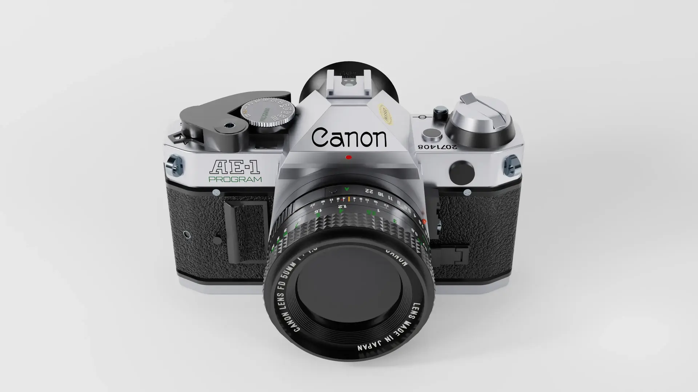

bersicht
Filter
All
Application
Web
Mobile
Games
Graphics
Data Science
Mach. Learn.
 Games
Games
Audio Mixing
Virtuelles Trainingssystem zum Mischen lernen an einem analogen Mischpult (Unity)
2023
 Mach. Learn.
Web
Mach. Learn.
Web
Automatic Foley Machine
Automatische Video-Vertonung durch Objekterkennung und Nutzung der Web Audio API
2023
 Mach. Learn.
Data Science
Mach. Learn.
Data Science
Data Mining Cup
(Platz 16 von 78)
Kaufvorhersage auf Grundlage einer Bestellhistorie
2022
 Mobile
Application
Mobile
Application
MischiFischi App
Mit React Native entwickelte App zum Erstellen von Fisch-Grafiken
2022
 Graphics
Web
Graphics
Web
WebGL Turntables
Nachbau eines Plattenspielers fr eine Echtzeit-3D-Anwendung mit Three.JS
2022
 Application
Application
Timetracker
In Java geschriebene Software zur projektbasierten Zeiterfassung (Prototyp)
2022
 Web
Web
Codex Code-Plattform
Mit Node.js entwickelte Web-Plattform zum Austausch von Code-Snippets
2020
Finding a Home (2021)
Projekt:
Point & Click Adventure
Kurs:
Media/Game Design 2
Semester:
2 (Media Systems, HAW Hamburg)
Engine:
Adventure Studio (v.3.5.0)
Hauptaufgaben:
Leveldesign, Development
Mitwirkende:
Soe ., Dana H., Mursal D.
Retro IBM Desktop Mockup by Anthony Boyd Graphics
Aufgabe
Im Rahmen des Kurses Media/Game Design 2, in dem einfhrende Elemente des Game Designs behandelt
wurden, war das Hauptziel einen spielbaren, kleinen Game-Prototypen umzusetzen. Die Game Engine
konnte dafr frei gewhlt werden.
Im Fokus der Kursarbeit stand der bergreifende Spieleentwicklungsprozess im Fokus: Von der Ideen-
und Teamfindung hin zur Aufwandsschtzung, dem Erarbeiten eines Grobkonzepts und schlielich der
Umsetzung des Vorhabens.
Ergebnis
Play Me!
Das Produkt des Kurses ist Finding a Home: Der Prototyp zu einem Point-and-Click-Adventure in
Pixel-Art, das die Zukunfts-Geschichte eines Menschen erzhlt, der aufgrund des unbewohnbaren
Zustands der Erde ein neues Zuhause im Universum sucht und auf seiner Reise diverse Abenteuer erlebt.
Zur Realisierung des Prototyps wurden diverse frei erhltliche Game-Assets und Sounds verwendet.
Externer Inhalt von YouTube
Es bentigt Ihre aktive Einwilligung, um den YouTube-Inhalt anzuzeigen. Ihre Einwilligung geben Sie durch das Umlegen des Schalters (Aktivieren der Checkbox).
Der Inhalt wird anschlieend geladen.
Wrath of Tiny Knight (2021)
Projekt:
2D Pixel-Art-Sidescroller
Kurs:
Media/Game Design 3
Semester:
3 (Media Systems, HAW Hamburg)
Engine:
Unity 2021.1.6f1 (C#)
Hauptaufgaben:
HUD Design, Development-Support
Mitwirkende:
Moritz U., Paul S.
Aufgabe
Die Spieleprojekte aus dem vorherigen Kurs sollten in Media/Game Design 3 deutlich weiterentwickelt
werden. Dafr wurden theoretische Inhalte vertieft, die in der Umsetzung dann Anwendung finden sollten.
So lag der Fokus der Projektarbeit in der Weiterentwicklung und damit auch auf intensiveren Testing und
Polishing.
Ergebnis
Der Prototyp Wrath of Tiny Knight, einem 2D-Sidescroller in Pixel-Art-Optik, in dem ein kleiner Ritter
mit Jump'n'Run-Manvern sowie einem einfachen Kampfsystem durch eine eher dstere, mittelalterliche Spielwelt
gesteuert wird, wurde bereits in Media/Game Design 2 von Moritz U. und Paul S. mageblich entwickelt.
Da die Grundmechaniken sowie das Leveldesign bereits sehr fortgeschritten waren, ging es nun vor allem darum,
Feedback-Mechaniken, User Interfaces, neue Gegnertypen, Sounds und weitere kleine Verbesserungen einzuarbeiten,
die zu einem runderen Spielerlebnis fhren.
Am Ende kam ein spielbarer Prototyp heraus, der zwar nicht gnzlich fehlerfrei ist, aber insgesamt schon ein gutes
Spielgefhl vermittelt und Spielidee, Mechanics, den Core Gameplay Loop sowie die Game Design Pillars transportiert.
Externer Inhalt von itch.io
Es bentigt Ihre aktive Einwilligung, um den Itch-Inhalt anzuzeigen. Ihre Einwilligung geben Sie durch das Umlegen des Schalters (Aktivieren der Checkbox).
Der Inhalt wird anschlieend geladen.
Steuerung
Aktion
Controller (Xbox)
Controller (PS4)
Keyboard & Mouse
Laufen
Linker Joystick X-Achse
Linker Joystick X-Achse A, D
Ducken
Linker Joystick Y-Achse (-)
Linker Joystick Y-Achse (-)
S
Springen
A
Space
Attack
X
Left Mouse
Health Potion
B
E
Activate Power
Y
Right Mouse
Details
Inhalt & Story
Ein kleiner Ritter kmpft sich durch die Welt und rumt alles, was sich ihm in den Weg stellt, konsequent aus dem Weg.
Doch wie lautet sein Name? Und wofr kmpft er berhaupt? Das wei bislang niemand!
Doch eines steht fest: Sein Zorn hat einen Grund und Tiny Knight wird gnadenlos weiterkmpfen, bis er erreicht hat, wonach er strebt
Das Spiel verrt zunchst wenig ber die Beweggrnde des Helden, der sich der feindlichen
bermacht stellt. Die Story, die in einer mittelalterlichen Welt spielt, wird nicht nher beleuchtet. Das Gameplay, auf dem
der Fokus liegt, fhrt die Spielenden durch ein Karussell der Emotionen aus Spannung, Frust und Euphorie.
Inspiration & Referenzen
- Dead Cells
- Foregone
- Blasphemous
Spielregeln & Mechanics
Spielregeln
Der Character muss durch die einzelnen Level gesteuert werden, um zum Ausgang des Ziels zu gelangen. Dabei knnen auftretende
Hindernisse bekmpft oder umgangen werden.
Der Character besitzt eine Health-Bar, die bei gegnerischen Treffern und Verletzungen Schaden nimmt. Mit vollstndiger Entleerung
der Health-Bar stirbt der Character und das Spiel muss vom Anfang des Levels neu aufgenommen werden.
Die verschiedenen Bewegungsmglichkeiten des Characters, die einsetzbaren Waffen sowie die im Level versteckten Collectables
untersttzen beim Bezwingen der sich in den Weg stellenden Hindernisse.
Mechanics
- Steuerung des Characters mit Controller oder Maus & Keyboard durchs Level ohne Zeitlimit
- Hindernisse mssen bekmpft, berwunden oder umgangen werden
- Health-Bar des Characters schrumpft bei gegnerischen Treffern oder Verletzungen
- Stirbt der Character (leerer Health-Bar) muss das Level von Anfang an neu aufgenommen werden
- Untersttzt wird der Character durch seine Bewegungsmglichkeiten, einsetzbare Waffen und durch im Level platzierte Collectables
Aesthetics
- 2D Pixelart
- Tiefe durch mehrere Ebenen; Parallaxe
- Dstere, entsttigte Umgebung mit dynamischen Lichtquellen als optische Highlights
- mittelalterliche Atmosphre: Burgen, Verliese, Wlder, Seen
- Mischung aus "Retro"-Soundtrack und realistischen SFX
Character/Enemies, Objekte und Umgebung im eher entsttigten 2D-Pixel-Art-Look wurden aus diversen externen Quellen zusammengestellt.
Mit genauem Blick wird erkenntlich, dass nicht mit einer einheitlichen Pixel-Gre fr Sprites und Tilemaps gearbeitet wurde,
trotzdem wurde darauf Wert gelegt, dass alles mglichst gut zusammenpasst. Untersttzt wird das Zusammenspiel der Assets durch
Farbanpassungen und gesetzte Lichtquellen.
Die verwendeten Assets sind also vor allem eine kuratierte Sammlung aus frei verfgbarem Material, das teilweise aber auch abgendert
oder neu kombiniert wurde, um den gewnschten Anforderungen zu entsprechen oder eigene Animationen zu entwickeln.
Das User Interface (Start- und Pausemen) sowie das Graphic User Interface (im Spiel angezeigtes Inventar, aktuelle Waffe, Info-Bars etc.)
wurden selbst entwickelt unter Verwendung der im Level eingesetzten Sprites wie der Potion oder dem Character-Sprite.
Beim Sound wurde ebenfalls auf frei verfgbares Material gesetzt. So sind Feedback-Sounds/Sound-Effekte weitestgehend realistische
Foley-Sounds aus externen Quellen, teilweise fanden aber auch eigene SFX-Aufnahmen (Tiny Knight Sounds) statt.
Der Soundtrack, der das Level begleitet, wurde selbst von Paul S. komponiert und produziert.
Environment Design
Entsprechend des mittelalterlichen Hauptcharakters spielt sich das Geschehen in einer mittelalterlichen, dsteren Umgebung ab, die aus Wldern, Wiesen, Seen, Burgen und Verliesen besteht.
Die Gegner sowie deren Angriffe bzw. Waffen sind dem Setting angepasst und so trifft man beim Durchlaufen des Levels vor allem auf Ritter in schwerer Rstung und starken Waffen (Heavy Bandits), aber auch auf Gegner, die aus der Luft angreifen (Flying Bat) oder Bogenschtzen (Archer), die aus der Distanz feuern knnen.
Dabei ist die Umgebung so angelegt, dass die Bewegungsmglichkeiten geschickt eingesetzt werden mssen, um Abgrnde zu berwinden, neue Bereiche zu ergrnden oder Gegner auszuweichen, mit denen eine Konfrontation manchmal aber auch unumgnglich ist und sogar von Vorteil sein kann (z.B. zum Auffllen der Special Ability oder Erreichen neuer Health Potions).
Heavy Bandit
Patrouilliert auf fest abgesteckten Bereichen und greift den Tiny Knight mit schweren Schwerthieben an, sobald dieser sich nah genug heranwagt.
Folgt dem Tiny Knight auf kleineren Distanzen, lsst sich aber schnell abschtteln.
Flying Bat
Fliegt auf der Stelle und scheint zunchst harmlos. Greift an, sobald sich der Tiny Knight in einem bestimmten Radius befindet und verfolgt diesen solange, bis er verletzt wurde.
Nach einer Attacke wartet die Fledermaus auf einer neuen Position. Greift von oben an und kann manchmal schwer zu erreichen sein, ist aber nicht sonderlich stark.
Archer
Kann Pfeile auf weite Distanz und in relativ hoher Geschwindigkeit abfeuern. Ist im Nahkampf nicht besonder ausgestattet.
3D-Modeling:
Canon AE-1 (2022)
Projekt:
3D Modellierung mit Blender
Kurs:
Computergrafik und -Animation
Semester:
4 (Media Systems, HAW Hamburg)
Software:
Blender (2.93.6)

Mockup psd created by xvector - www.freepik.com
Aufgabe
Die erlernten Grundlagen von Blender, die uns Studierenden im Kurs Computergrafik und -Animation
nhergebracht wurden, sollten zum Abschluss angewendet werden, um ein Objekt unserer Wahl zu
modellieren. Mindestvoraussetzung war, dass das spter modellierte Objekt aus wenigstens zehn
Einzelteilen besteht und mit Materialien sowie Texturen versehen ist.
Vorlage
Als Vorlage diente eine Canon AE-1 Program Spiegelreflexkamera, die zunchst von allen Seiten abfotografiert wurde.

Ergebnis
Herausgekommen ist ein High-Poly-Model aus 81 Objekten mit insgesamt ~5.95 Mio. Faces (5 555 526
Vertices, 11 510 354 Edges, 11 909 630 Triangles).
Die Texturen fr die unterschiedlichen Materialien stammen grtenteils aus externen Quellen,
Aufdrucke/Labels (inkl. Bump- bzw. Normal-Maps) wurden in Adobe Illustrator & Adobe Photoshop
selbst nachgebaut.
Soundtrack 'Too Cool' by Kevin MacLeod
Externes Material
Textures
- Black Leather 02 (cgbookcase.com), https://www.cgbookcase.com/textures/black-leather-02/ [abgerufen am 19.12.2021]
- Metal 031 (ambientcg.com), ambientCG.com/a/Metal031 [abgerufen am 19.12.2021]
- Metal 032 (ambientcg.com), ambientCG.com/a/Metal032 [abgerufen am 19.12.2021]
Materials
- Basic Rubber/Plastic material for Blender (Nikola3D), https://www.deviantart.com/nikola3d/art/Basic-Rubber-Plastic-material-for-Blender-666916838 [abgerufen am 19.12.2021]
Icons
- thunderbolt (B Illustrations, flaticon.com), https://www.flaticon.com/premium-icon/thunderbolt_3594010 [abgerufen am 20.12.2021]
Music (Animation)
- Too Cool by Kevin MacLeod
Link: https://incompetech.filmmusic.io/song/4534-too-cool [abgerufen am 24.12.2021]
License: https://filmmusic.io/standard-license
Turntables (2022)
Projekt:
Echtzeit-3D-Anwendung mit Three.JS
Kurs:
Computergrafik und -Animation
Semester:
4 (Media Systems, HAW Hamburg)
Technologien:
Three.js, Javascript, HTML
Aufgabe
Fr die Prfungsleistung sollte eine Echtzeit-3D-Anwendung mithilfe der JavaScript Bibliothek
Three.js entwickelt werden.
Hierfr sollte ein geladenes 3D-Modell mit einfachen Grundkrpern und den Mglichkeiten, die
Three.js mit sich bringt, nachgebaut werden. Dieser Nachbau sollte aus mind. zehn Einzelteilen
bestehen, sich mit Mausklicks (Raycasting) steuern lassen und durch diese Interaktion Animationen
ausfhren. Diese Interaktion sollte dann auch fr das geladene Modell adaptiert werden, wobei
freigestellt war, ob die Animationen hndisch oder mit externer Software direkt an das Modell
gebunden werden.
Smtliche in der Szene platzierten Objekte sollten auerdem physikalischen Krften unterliegen
(Cannon.es) und miteinander kollidieren knnen. Zur Demonstration sollten die in der Vorlesung
gezeigte Mglichkeit zum Werfen physikalischer Blle implementiert werden.
Zur Realisierung durften ausschlielich die in der Vorlesung genutzten Bibliotheken verwendet werden,
die ber dieselben Pfade wie in den Kursbeispielen geladen werden sollen.
Darunter:
- Cannon.es 0.18.0
- Cannon.es Debugger 0.1.4
- Dat.Gui 0.7.7
- Three.js r134
- Three.csg 2020
- Tween.js 18.6.4
Ergebnis
Hauptbestandteil des hier realisierten Demonstrators ist der (rechte) Plattenspieler, welcher auf Grundlage des linken
von einer externen Quelle stammenden Plattenspielers entstanden ist und als Vorlage fr den rechts stehenden Nachbau mit
Grundkrpern und Extrusionen diente.
Bei der Originaldatei des geladenen Plattenspielers handelte es sich um eine FBX-Datei, die mithilfe der Software
Blender in das geforderte GLTF exportiert wurde. In diesem Zuge wurden die Texturen sowie Farbgebungen leicht angepasst
und Animationen erstellt. Die Geometrien selbst blieben unverndert.
Die (angepassten) Texturen des geladenen Plattenspielers wurden im Groen und Ganzen ebenfalls fr den Nachbau in
Three.js verwendet.
Fr ein stimmigeres Gesamtbild der Szene wurden die Plattenspieler zusammen mit zwei Lautsprechern auf einem Mbelstck platziert.
Diese Modelle stammen ebenfalls aus einer externen Quelle, wurden nur minimal korrigiert und wie die Vorlage des
Plattenspielers als GLTF in die Three.js-Szene geladen.
Features
Kamera
-
Linke Maustaste (1-Finger-Touch):
Rotation
-
Mausrad (Pinch):
Zoom
-
Rechte Maustaste (2-Finger-Touch):
Pan
Plattenspieler
Beide Plattenspieler knnen durch Mausklicks (linke Maustaste) oder Tap gesteuert werden.
Dabei sind folgende Aktionen mglich:
-
On-Off-Switch:
Einschalten des Plattenspielers (rotes Licht als Indikator am Power-Switch)
-
Start/Stop-Button:
Starten/Stoppen der Drehschreibe
-
Nadellicht:
Hoch- und Runterdrcken des Nadellichtzylinders (links runter, rechts hoch)
-
45/33 RPM Buttons:
ndern der Abspielgeschwindigkeit
-
Arm:
Ein Klick auf den Arm senkt bzw. hebt diesen (wenn die Platte nicht luft)
Luft der Plattenspieler (Drehscheibe mit Platte drehen sich) und befindet sich der Arm (mit Nadel) auf der
Schallplatte, wird Musik abgespielt. Beide Plattenspieler spielen unabhngig voneinander Musik ab.
Ist die Musik zuende, die Nadel aber weiterhin auf der Schallplatte und dreht sich die Scheibe weiterhin, hrt man
die Platte rauschen/knacken.
Die Abspielgeschwindigkeit des Sounds kann verndert werden, die sichtbare Drehgeschwindigkeit bleibt dieselbe.
Lautsprecher
Die Lautsprecher geben die von den Plattenspielern abgespielte Musik wieder. Sie sind mit "Positional Audio" so
eingestellt, dass der gut hrbare Bereich auch vor diesen Lautsprechern liegt.Bewegt sich die Kamera hinter die
Lautsprecher oder sehr weit von diesen weg, nimmt die Lautstrke der Sounds ab.
Physik
Die Szene und die sich darin befindenden Objekte sind mit physikalischen Eigenschaften ausgestattet (Schwerkraft und
Masse). Um Kollisionen zu verursachen knnen mit einem Klick auf die Leertaste Tennisblle geschossen werden.
Die Flugrichtung der Tennisblle orientiert sich ausgehend von der Kamera an der aktuellen Mauszeigerposition, wodurch
grob gezielt werden kann.
-
Leertaste + Mauszeiger (Zwei-Finger-Tap):
Zielen + Schuss/Wurf eines Tennisballs
Die Plattenspieler sowie die Lautsprecher sind dynamische Krper, d.h. sie reagieren auf Kollisionen und werden von
diesen beeinflusst. Der Schranktisch hingegen ist statisch: Objekte kollidieren mit diesem Krper, der Krper selbst
reagiert aber nicht auf diese Kollisionen. Hintergrund ist, dass aufeinander gestapelte Boxen mit physikalischen
Eigenschaften (Cannon.js) sehr unstabil sind und auf Dauer nicht still stehen (somit darauf platzierte Objekte mit der
Zeit herunterfallen).
Das Problem lsst sich auch in einem der offiziellen Beispiele nachvollziehen:
schteppe.github.io/cannon.js/demos/ ("convex on convex").
GUI
Light Color & Light Intensity
Das Lichtsetting lsst sich mit dem sich am rechten oberen Rand befindlichen Graphic User Interface einstellen.
Die Position der Lichtquellen ist dabei fest, je ein Spotlight verfolgt aber einen der Plattenspieler.
Die Lichtstimmung kann ber die Intensitt der vorhandenen Lichtquellen sowie die Farbgebung (getrennte RGB-Werte, wobei
die Werte 0-1 in dem GUI die RGB-Werte von 0-255 abbilden.
General
ber die Buttons im Bereich "General" lassen sich die Positionen der Objekte zurcksetzen, geschossene Tennisblle
wieder entfernen (z.B. bei Performance-Einbrchen) und die Objekte als Wireframe anzeigen (entweder alle oder nur den
nachgebauten Plattenspieler).
Der Taste "Stop Aud&Anim" stoppt alle laufenden Tweens und pausiert laufende Audiospuren.
MischiFischi (2022)
Projekt:
Fisch-Creator-App mit Projektionsanbindung
Kurs:
Mobile Systeme
Semester:
5 (Media Systems, HAW Hamburg)
Technologien:
React Native, JavaScript
Mitwirkende:
Anastasia E., Moritz U.
 Mobile app PSD erstellt von rezaazmy - de.freepik.com
Mobile app PSD erstellt von rezaazmy - de.freepik.com
Aufgabe
Das Vorhaben des Kurses Mobile Systeme (Wahlpflichtfach im Studiengang Media Systems; auch MOSY genannt)
im Sommersemester 2022 war es, fr eine Ausstellung am Department Medientechnik der Hochschule fr Angewandte Wissenschaften zusammen
mit dem Kurs IT-Systeme (Pflichtmodul im Studiengang Medientechnik; auch ITS genannt) eine Ausstellung zu einem Thema
der Sustainable Development Goals zu realisieren.
Der Kurs IT-Systeme, in dessen Verantwortung die Organisation und Umsetzung der medientechnischen Ausstellung lag, hat sich dabei auf
das Thema LIFE BELOW WATER: Conserve and sustainably use the oceans, seas and marine resources for sustainable development
geeinigt.
Hierzu sollten medientechnische Installationen bspw. mit Projektoren, Beschallungsanlagen, Motoren etc. umgesetzt werden, die durch
Anwendungen des Kurses Mobile Systeme interaktiv gesteuert werden knnen sollten. Als Steuerzentrale der Ausstellungstechnik diente die
knotenbasierte Software und Entwicklungsumgebung TouchDesigner der Firma Derivative, die vom ITS-Kurs verwaltet wird und gleichzeitig
die Schnittstelle fr die Interaktion zwischen mobiler Anwendung und IT-System darstellt.
Unser Team des MOSY-Kurses hat sich mit einer der zwei Gruppen des ITS-Kurses zusammengetan, um eine Projektionsflche zu bespielen.
Die Aufgabe war es, ein mobiles System zu entwickeln, das mit der vom ITS-Team bereitgestellten Projektion interagieren bzw. diese
beeinflussen kann.
Unter der thematischen Grundidee ein Bewusstsein zum Erhalt der Artenvielfalt in Ozeanen schaffen, wollten wir eine App entwickeln,
in der sich mithilfe eines Baukastensystems eigene Fische aus vorgefertigten Fisch-Bausteinen erstellen lassen. Diese sollten dann
von der App an eine Projektion (mit dem TouchDesigner als Schnittstelle) oder an einen Bildschirm gesendet werden knnen und dort gem
der Idee wie in einem digitalen Ozean herumschwimmen.
Die App sollte mit dem Command Line Interface Expo und dem Framework React Native umgesetzt,
das Projekt an sich mit Scrum (Vorgehensmodell) geplant und bearbeitet werden.
Ergebnis
Mockup PSD erstellt von rawpixel.com - de.freepik.com
In drei je dreiwchigen Sprints ist eine App fr iOS und Android entstanden, die (aufgrund der strengen Restriktionen seitens der
App-Stores) nur ber Expo zugnglich gemacht wurde.
Mittels eines Baukastensystems und unterschiedlichen Bestandteilen wie Farben, Mustern und Formen kann ein selbst gestalteter Fisch
erstellt, exportiert und (zum Zeitpunkt der Ausstellung) an die Projektion gesendet werden.
Auerdem kann zustzlich ein Text versendet werden, der Lsungsvorschlge zum Erreichen der Nachhaltigkeitsziele beinhaltet, welcher
ebenfalls innerhalb der Projektion dargestellt wird.
Die Anwendung beinhaltet zwei Hauptbereiche: Den Build-Screen und den Collection-Screen.
Im Build-Screen kann aus den verschiedenen Bausteinen ein eigener Fisch erstellt werden, im Collection-Screen finden sich alle Fische,
die bisher erstellt wurden, und konnten hierber an die Ausstellungsprojektion gesendet werden. Der Build-Screen beinhaltet auerdem die
Mglichkeit, den aktuell bearbeiteten Fisch in die Foto-Bibliothek des Smartphones zu exportieren.
Die Anbindung an die Ausstellungsprojektion erfolgte ber einen Websocket, der sich mit dem im lokalen HAW-Netzwerk befindlichen
TouchDesigner-Server verbunden hat.
Um flexibel in der Websocket-Adresse bleiben und bei Bedarf auch noch kurz vor oder sogar whrend der Ausstellung die
Websocket-Adresse anpassen zu knnen, wurde auerdem ein externer Webserver aufgesetzt, ber den die IP-Adresse manuell jederzeit gendert
werden kann. Die Anwendung verbindet sich bei jedem Aufruf des Collection-Screens mit diesem Webserver, um die aktuelle Adresse
abzurufen und bei Bedarf zu ndern.
ber den Websocket wird ein JSON, das eine UUID, den Text und den erstellten Fisch als SVG beinhaltet, an den TouchDesigner bermittelt, dessen
Programmierung vom ITS-Team vorgenommen wurde, um die bermittelten Fische schlielich auf einer ozeanhnlichen Projektion darzustellen.
Timetracker (2022)
Projekt:
Software zur projektbasierten Zeiterfassung
Kurs:
Software Engineering
Semester:
4 (Media Systems, HAW Hamburg)
Technologien:
Java, Java Swing, SQL
Mitwirkende:
Kevin K., Moritz U., Paul S., Sven M.
Browser fenster PSD erstellt von designwarrior - de.freepik.com
Aufgabe
Im Zuge des Kurses Software Engineering wurde anhand einer Fallstudie zur Analyse,
Planung und Umsetzung von Software das nachfolgende Projekt umgesetzt. Die Kursinhalte
fokussierten sich auf den Prozess des Software Engineerings, der anhand einer selbstgewhlten
Aufgabe komplett durchlaufen werden sollte.
Ergebnis
Die Zielsetzung unseres fnfkpfigen Teams war eine mglichst plattformunabhngige
(Windows, MacOs, Linux) Software zum Erfassen von projektbasierter Arbeitszeit (mit Fokus auf
Freelancer).
Mit diesem bergeordneten Vorhaben wurden die Anforderungsanalyse betrieben, das Vorgehensmodell
ausgewhlt, die Software geplant (Architektur, Software-Pattern, Datenbankstruktur) und schlielich
umgesetzt (nach priorisierten Features) sowie getestet.
Vorgegangen wurde mit dem Scrumban-Modell, das aufgrund der knappen Zeit fr
unsere Zwecke leicht angepasst wurde.
Data Mining Cup (2022)
Projekt:
Modellentwicklung zur Vorhersage von Kufen
Kurs:
Adaptive Systems and Artificial Intelligence
Semester:
5 (Media Systems, HAW Hamburg)
Technologien:
KNIME, Python (Pandas, SKLearn, Numpy, Matplotlib, XGBoost)
Mitwirkende:
Kevin K., Moritz U.
Der seit 2002 jhrlich stattfindende Data Mining Cup (DMC) wurde von der prudsys AG ins Leben
gerufen und wird seitdem von ihr ausgerichtet. Es handelt sich um einen internationalen Wettbewerb,
an dem je zwei Teams einer Bildungseinrichtung teilnehmen knnen. Ziel des DMC ist es, die
teilnehmenden Studierenden herauszufordern, die bestmgliche Lsung fr ein Data Mining Problem
zu erarbeiten, wobei sich die Aufgaben auf reale und praxisorientierte Probleme fokussieren.
Die Teilnahme am Data Mining Cup durch unser HAW-Team fand im Rahmen des Kurses Adaptive Systems
and Artificial Intelligence statt, mit dem wir das erste Mal mit den groben Grundlagen von
Data Science und Machine Learning in Berhrung kamen.
Aufgabe
Szenario
Ein Online-Handel mit Gtern des alltglichen Gebrauchs versendet regelmig Newsletter, um
seine Produkte zu bewerben. Diese Werbemanahme ist personalisiert und beinhaltet so auf
die Empfnger zugeschnittene Empfehlungen.
Das Problem: Oft werden werden in diesen Newslettern Produkte beworben, die von den Empfngern
gerade erst gekauft wurden und damit fr einen bestimmten Zeitraum irrelevant sind.
Statt Produkte fr eine fixe Anzahl an Tagen fr Empfehlungen zu sperren, mchte der
Online-Handel gezielter vorgehen und eine Lsung entwickeln, die mglichst genau vorhersagt,
in welcher Woche die wiederkaufenden Kunden ein regelmig gekauftes Produkt erneut erwerben werden.
Task
Die konkrete Aufgabe des 23. Data Mining Cups 2022 war es, ein Modell zu entwickeln, dass auf
Grundlage der Bestellhistorie Vorhersagen darber trifft, ob und (falls ja) in welcher Woche
ein Produkt wiedergekauft wird.
Die historischen Kaufdaten lagen im Zeitraum vom 01.06.2020 bis 31.01.2021.
Vorherzusagen war der Folgemonat vom 01.02.2021 bis 28.02.2021, welcher exakt vier Wochen lang war.
Als Vorhersage wurde eine Zahl von 0-4 erwartet, die fr den Wiederkauf steht:
- 0: kein Wiederkauf
- 1: Wiederkauf in der ersten Februar-Woche
- 2: Wiederkauf in der zweiten Februar-Woche
- 3: Wiederkauf in der dritten Februar-Woche
- 4: Wiederkauf in der vierten Februar-Woche
Die zum Entwickeln eines passenden Modells bereitgestellten Daten bestanden aus drei CSVs, die folgendes beinhalteten:
orders.csv
Die konkrete Bestellhistorie (ca. 1.2 Mio. Zeilen)
date
userID
itemID
order
2020-06-01
276
15667
1
2020-06-01
532
28708
1
...
...
...
...
2021-01-20
34638
594
2
2021-01-20
21517
19443
1
features.csv
Produktbezogene Eigenschaften (numerische Werte)
itemID
brand
feature_1
feature_2
feature_3
feature_4
feature_5
categories
15667
1201
4
0
30
0
163
[1680, 813, 218, 3915, 3914, 4069]
28708
504
84
10
0
441
3
[2591, 2312, 2708, 3603]
...
...
...
...
...
...
...
...
594
203
4
1
491
0
66
[1920, 3923]
19443
408
10
0
160
0
38
[1871, 3228]
category_hierarchy.csv
Hierarchische Zusammenhnge zwischen den Produktkategorien
category
parent_category
0
75
1
1499
...
...
4298
3898
4299
3898
Abzugeben war eine fr die Spalte prediction ausgefllte
submission.csv mit 10000 Zeilen:
userID
itemID
prediction
0
20664
NaN
0
28231
NaN
...
...
...
46127
7963
NaN
46130
395
NaN
Arbeit & Ergebnis
Gearbeitet wurde zunchst mit der knotenbasierten Software KNIME, um einen berblick
in die Daten zu erhalten, sie zu selektieren, teilweise bereits zu transformieren,
fr Feature-Engineering und um neue CSVs zu generieren.
Spter wurden die Daten hauptschlich mit Python in Jupyter Notebooks (mit
entsprechenden Libraries) verarbeitet und dort auch (bis auf wenige Ausnahmen)
verschiedene Verfahren gegeneinander getestet.
Vor der Anwendung konkreter Data-Mining-Verfahren haben wir aus den vorhandenen
Datenstzen neue Features entwickelt, mit der Absicht die Algorithmen mit ntzlichen
Zusatzinformationen fttern zu knnen, um so die Ergebnisse zu verbessern.
Darunter bspw.:
- Repeat Customer Probability
Repeat-Customers / (Onetimer + Repeat-Customers)
- Mean Difference To Next Purchase (User)
Dauer (Tage) bis zum Wiederholungskauf durch User
- Mean Difference To Next Purchase (Item)
Dauer (Tage) bis zum erneuten Kauf eines Produkts
- Total Item Orders (User)
Gesamte Produktkauf-Stckzahl durch User
- Total Item Orders (Item)
- Gesamte Produktkauf-Stckzahl aller User
- Brand-Order-Ratio
Punktzahl zu Einordnung der Markenbeliebtheit (bezogen auf die Hufigkeit aller Bestellungen der Gesamthistorie)
- Feature-Order-Ratio (1-5)
Punktzahl zu Einordnung der Feature-Beliebtheit (bezogen auf die Hufigkeit aller Bestellungen der Gesamthistorie)
- Total-Brand-Feature-Score
Gesamtpunktzahl aus Brand- & Feature-Order-Ratio
- Date(Year)
Jahr des Kaufdatums
- Date (Month)
Monat des Kaufdatums
- Date (Day Of Month)
Tag des Kaufdatums
- Date (Week Of Year)
Woche im Jahr des Kaufdatums
- Date (Day Of Year)
Tag im Jahr des Kaufdatums
Anstze
Als absolute Einsteiger im Gebiet der Data Science, wollten wir zunchst keine Idee
grundlos verwerfen.
Fr ein Time-Series-Problem waren die gelieferten Datenstze aus unserer Sicht zu
allerdings zu klein. Auch ein Recommender System wurde diskutiert, kam aber aus
demselben Grund nicht in Frage. Ein K-Means-Clustering, um einzelne Produkte zu
gruppieren fhrte auch nicht weiter.
Klassifikation
Der erste vielversprechende Ansatz war eine Klassifikation, da die geforderten
Werte in der submissions.csv bereits Klassen darstellen (Werte aus {0, 1, 2, 3, 4}).
Das konkrete Verfahren hierfr war zunchst nicht sonderlich wichtig. Viel mehr stellte
sich die Frage, wie der vorhandene Datensatz gelabelt werden knnte, um die Zielvariable fr
ein entsprechendes Klassifikationsverfahren zu definieren.
Eine Idee dazu war es, das Datum einer Bestellung in die entsprechende Woche des
jeweiligen Monats umzuwandeln, den Monat also zu vierteln. Die Problematik
hierbei war, dass die Klasse 0 so unbekannt blieb. Um diese unbekannte Klasse 0 zu
definieren, htten auch nicht stattgefundene Kufe von Produkten in die Monate aufgenommen
werden mssen.
Hierzu gab es zwar Lsungsanstze unsererseits, die aber entweder dazu fhrten, dass
ein entsprechendes Modell zu viele Nullen antrainiert bekam und somit die
Wahrscheinlichkeit der Voraussage einer Null (kein Wiederkauf) unwahrscheinlich stark
anstieg. Oder es waren Anstze, die zwar die Hufigkeiten der auftretenden Klassen
in den historischen Bestelldaten beibehalten htten, aber nicht von uns getestet werden
konnten, da wir damit den Datensatz zu sehr vergrerten und so Speicherprobleme (RAM)
provoziert wurden.
Als Verfahren wurden hier XGBoost (Classifier), Random-Forest und ein einfacher
Decision-Tree verwendet.
Regression
Als alternative Zielvariable (Label) haben wir schlielich die Dauer bis zum nchsten
Kauf (in Wochen) definiert: Ein konkreter Datensatz einer Bestellung enthielt so einen
Wert, der angibt, wie lange es in Wochen (die Ergebnisse mit der Anzahl an Tagen waren
schlechter) bis zum nchsten Kauf dauert.
Da hier allerdings logischerweise keine Klassen von 0-4 entstanden, sind wir damit bei
der Regression gelandet. Um spter aus den numerischen Vorhersagen die fr die Abgabe
bentigten Klassen zu erhalten, wurde das Datum der Vorhersage ermittelt, um dieses
schlielich in die entsprechende Februarwoche zu konvertieren.
Auch hier machte sich ein Problem bemerkbar: Je nher ein Kauf am Ende des
Datenset-Zeitraums (31.01.2021) lag, desto mehr Nullen entstanden als Wert fr die
Zielvariable (folgt nach einem Produktkauf kein nchster Kauf, ist der zeitliche
Abstand = 0; potenziell knnte aber ein Kauf stattfinden, der vorhergesagt werden soll)
und damit eine Verflschung der Vorhersagen.
Die Lsung hierfr war eine starke Beschneidung des Trainingssets:
Das gesamte Datenset wurde nicht mehr zeitlich gesplittet (z.B. Juni - Dezember = Trainingsset,
Januar = Testset), sondern so, dass das Trainingsset alle Kufe auer dem letzten enthielt
und somit der nchste Kauf immer bekannt ist und berprft werden kann. Das Predictionset,
auf dem dann die Vorhersagen getroffen werden sollen, enthielt alle Kufe, zu denen das
nchste Kaufdatum nicht bekannt war, weil keiner mehr stattgefunden hat.
Um die Modelle berprfen zu knnen, wurde der Datensatz wiederum beschnitten, damit auch
im Testset die Modell-Vorhersagen berprft werden konnten, um die Vorhersagegenauigkeit zu
ermitteln.
In einem Vergleichstest verschiedener Regressionsmodelle stellte sich die Lineare Regression
als Verfahren mit den genausten Ergebnissen heraus, wobei wir zur Evaluierung bercksichtigt
hatten, dass die Diskrepanz zwischen der Genauigkeit auf dem Trainingsset und der auf dem
Testset mglichst klein bleibt, um ein Overfitting mglichst ausschlieen zu knnen.
Problem, dass sich mit der Linearen Regression (bzw. der numerischen Vorhersage allgemein)
herausbildete war, dass immer nur der direkt nchste Kauf vorausgesagt wurde.
Einige der Vorhersagen landeten also noch vor dem Monat Februar, womit nicht geklrt war,
ob ein erneuter Kauf dann u.U. im Februar oder erst danach stattfinden wrde.
Circa 630 der fr die Abgabe relevanten Vorhersagen landeten entsprechend noch vor dem Februar,
die vorher aber in durchaus regelmigen Abstnden und mind. sechs Mal gekauft wurden.
Die Frage, die sich hieraus auerdem ergab: Hat ein Kunde einfach aufgehrt in dem Shop
einzukaufen oder reicht evtl. die direkt nchste Kaufvorhersage einfach nicht aus, um eine
Aussage ber den Kauf im Februar zu treffen (weil bspw. das Kaufintervall zu klein ist).
Lsungsansatz 1 war, einfach mit den vorhergesagten Werten erneut Vorhersagen zu treffen.
Lsungsansatz 2, welcher im kurzen Vergleich auch besser funktionierte, war, ein Delta vom
31.01.2021 also dem letzten Tag des gesamten Datensets bis zum zuletzt stattgefundenen
Kauf eines Produkts durch einen Kunden zu berechnen. War dieses Delta kleiner als 1/2 * der
Standardabweichung + dem Mittelwert der Kaufabstnde wurde der durschschnittliche Kaufabstand
zur eigentlichen Vorhersage durch die lineare Regression hinzuaddiert. Damit landete dann der
Hauptteil der Vorhersagen im oder nach Februar und wurde so fr die Abgabe bercksichtigt.
Platzierung
Von insgesamt 78 Teams von 59 Universitten bzw. Bildungseinrichtungen aus 23 Lndern,
die sich zu dem Wettbewerb angemeldet hatten, reichten 44 eine Lsung ein.
Mit der von uns eingereichten Lsung erreichten wir den 16. Platz.
Team Ranking
ranking
team name
score
01
Uni_Asia_Pacific_1
8643
02
HS_Zwickau_1
8531
03
Uni_Asia_Pacific_2
7717
04
Uni_Alfenas_1
7104
05
Inst_Kolkata_1
7101
06
Uni_Hong_Kong_1
6886
07
Uni_Perm_NRP_1
6828
08
Uni_Mannheim_1
6608
09
Uni_Grand_View_2
6554
10
Uni_Grand_View_1
6544
11
TU_Dortmund_Gruppe2
6372
12
HS_Wismar_2
6010
13
HS_Wismar_1
5960
14
Uni_Perm_NRP_2
5939
15
HS_FOM_1
5806
16
HS_AW_Hamburg_1
5686
17
HS_Zwickau_2
5664
18
Uni_State_Iowa_1
5621
19
MX_Chemnitz_Dresden_1
5606
20
Coll_Anza_1
5577
21
Coll_SAKE_2
5565
22
Coll_SAKE_1
5533
23
Inst_KIT_1
5413
24
TU_Chemnitz_1
5369
25
Uni_Geneve_1
5311
26
Uni_Geneve_2
5237
27
Uni_Mannheim_2
5138
28
FH_St_Poelten_1
5132
29
Uni_Eichstaett_Ingolstadt_1
5095
30
Uni_Eichstaett_Ingolstadt_2
5062
31
TU_Chemnitz_2
5006
32
HS_Anhalt_2
5005
33
TU_Dortmund_1
4974
34
HS_Anhalt_1
4907
35
Uni_AS_Frankfurt_2
4891
36
Uni_Telkom_1
4851
37
UNI_ALABAMA_2
4588
38
Uni_FUNAAB_1
3898
39
Uni_Hamburg_1
0
40
Coll_DJS_Mumbai_1
0
41
Shalashov
0
42
Uni_Shahjalal _1
0
43
Uni_St_Petersburg
0
44
FH_St_Poelten_2
0
Team List
Educational Institution
Team name
Country
First name
Lirst name
Ankara Univesity
Uni_Ankara_1
Turkey (TR)
Ula
Ceyhan
Army institute of management kolkata
Inst_Kolkata_1
India (IN)
Bhupender
Singh
Asia Pacific University of Technology & Innovation
Uni_Asia_Pacific_1
Malaysia (MY)
Zhuo Xiu
Ngo
Asia Pacific university of technology and innovation
Uni_Asia_Pacific_2
Malaysia (MY)
MD Nowshad Ul
Alam
bannari amman inisitute of technology
Inst_BA_Technology_1
India (IN)
prabakar
m
BANNARI AMMAN INSTITUTE OF TECHNOLOGY
Inst_BA_Technology_2
India (IN)
AKSHAYA
U S
De Anza College
Coll_Anza_1
United States (US)
haruto
kosaka
Dwarkadas J. Sanghvi College of Engineering
Coll_DJS_Mumbai_2
India (IN)
Akshath
Mahajan
Dwarkadas Jivanlal Sanghvi College of Engineering
Coll_DJS_Mumbai_1
India (IN)
Ayush
Deshmukh
Faculdade de Informtica e Administrao Paulista (FIAP)
Uni_FIAP_1
Brazil (BR)
Lucas
Silva
Federal University of Agriculture Abeokuta
Uni_FUNAAB_1
Nigeria (NG)
Adejumobi
Joshua
FH St. Plten
FH_St_Poelten_1
Austria (AT)
Emil
Etlinger
FH St. Plten
FH_St_Poelten_2
Austria (AT)
Simon
Waldmann
FOM Hochschule fr konomie & Management
HS_FOM_1
Germany (DE)
Inga
Rhmkorf
Frankfurt University of Applied Sciences
Uni_AS_Frankfurt_1
Germany (DE)
Daniel
Csomos
Frankfurt University of Applied Sciences
Uni_AS_Frankfurt_2
Germany (DE)
Bastian
Stock
Grand View University
Uni_Grand_View_1
United States (US)
Gabriel
de Medeiros
Grand View University
Uni_Grand_View_2
United States (US)
Daniel
Wong
Hochschule Anhalt
HS_Anhalt_1
Germany (DE)
Julius Tom
Hannemann
Hochschule Anhalt (Anhalt University of Applied Sciences)
HS_Anhalt_2
Germany (DE)
Felix
Gra
Hochschule Bonn-Rhein-Sieg, Frankfurt University of Applied Sciences
MX_BRS_Frankfurt_1
Germany (DE)
Tobias
Knode
Hochschule Fulda
HS_Fulda_1
Germany (DE)
Tim
Schlitzer
Hochschule Wismar
HS_Wismar_1
Germany (DE)
Friedrich
Albrecht
Hochschule Wismar
HS_Wismar_2
Germany (DE)
Tim
Becker
Hong Kong Metropolitan University
Uni_Hong_Kong_Metropolia_1
Hong Kong SAR of China (HK)
Belinda
Shum
HSE University St Petersburg
Uni_St_Petersburg
Russia (RU)
Andrew
Shalashov
IIT Kharagpur
Inst_Kharagpur_1
India (IN)
Rahul
Golder
Indonesia University of Education
Uni_Indonesia_E_1
Indonesia (ID)
Yuliansyah
Ibrahim
Institut Sous-rgional de Statistique et d'Economie Applique
Inst_ISSEA_1
Cameroon (CM)
ANTRAN'NY AVO
RATOVO-ANDRIANARISOA
Institut Teknologi Bandung
Inst_Bandung_1
Indonesia (ID)
Rafi
Kusuma
Iowa State University
Uni_Iowa_State_1
United States (US)
Kanak
Choudhury
Jain university
Uni_Jain_1
India (IN)
Vikram
Priyani
Karlsruhe Institute of Technology
Inst_KIT_1
Germany (DE)
Benjamin
Jochum
Katholische Universitt Eichsttt-Ingolstadt
Uni_Eichstaett_Ingolstadt_1
Germany (DE)
Katharina
Beutel
Konkan Gyanpeeth College of Engineering Karjat
Coll_Konkan_Gyanpeeth_1
India (IN)
Anup
Kunte
KU Eichsttt-Ingolstadt
Uni_Eichstaett_Ingolstadt_2
Germany (DE)
Serkan
Akdemir
L. D. College of Engineering
Coll_LD_Engineering_1
India (IN)
Hady
Khan
Long Island University
Uni_Long_Island_1
United States (US)
Hunter
Luckow
New Jersey Institute of Technology
Inst_New_Jersey_1
United States (US)
Firas
Gerges
Northeastern University (China)
Uni_Northeastern_1
China (CN)
Yujin
Wen
Perm National Research Polytechnic University
Uni_Perm_NRP_1
Russia (RU)
Anton
Svitek
Perm national research polytechnic university
Uni_Perm_NRP_2
Russia (RU)
Nikita
Chernyshev
PSG College of Technology
Coll_PSG_Technology_1
India (IN)
Sairam
Vaidya
Shah and Anchor Kutchhi Engineering College
Coll_SAKE_1
India (IN)
Apurva
Shardul
Shah and Anchor Kutchhi Engineering College
Coll_SAKE_2
India (IN)
Naman
Desai
Shahjalal University of Science and Technology
Uni_Shahjalal _1
Bangladesh (BD)
Md Borhan
Uddin
Shahjalal University of Science and Technology, Sylhet, Bangladesh
Uni_Shahjalal _2
Bangladesh (BD)
Prosenjit
Basal
Technical University of Chemnitz
TU_Chemnitz_2
Germany (DE)
Johanna
Huntenburg
Technical University of Dortmund
TU_Dortmund_1
Germany (DE)
Hepsiba
Komati
Technische Universitt Chemnitz and Technische Universitt Dresden
MX_Chemnitz_Dresden_1
Germany (DE)
Tennessee
Schrage
Telkom University
Uni_Telkom_1
Indonesia (ID)
Asfa
Amalia Dinata
The Chinese University of Hong Kong
Uni_Hong_Kong_1
Hong Kong SAR of China (HK)
Deyuan
KONG
The University of Alabama in Huntsville
Uni_Alabama_2
United States (US)
Charity
Mwanza
TU Chemnitz
TU_Chemnitz_1
Germany (DE)
Tilmann
Bartsch
TU Dortmund
TU_Dortmund_2
Germany (DE)
Ivan
Pushkarev
Universidad Abierta y a Distancia de Mxico
Uni_ADM_1
Mexico (MX)
Omar Trinidad
Gutirrez Mndez
Universidade Federal de Alfenas
Uni_Alfenas_1
Brazil (BR)
Bruno
Vilela
Universitt of Hamburg
Uni_Hamburg_1
Germany (DE)
Steffen
Mller
Universit de Genve
Uni_Geneve_1
Switzerland (CH)
Juraj
Rosinsky
Universit de Genve
Uni_Geneve_2
Switzerland (CH)
Rik
Voorhaar
Universiti Sains Malaysia
Uni_Sains_Malaysia_1
Malaysia (MY)
Jai Wei
Choo
University of Alabama in Huntsville
Uni_Alabama_1
United States (US)
Drake
Sanchez
University of Alberta
Uni_Alberta_1
Canada (CA)
Abhimanyu
Nag
University of Applied Sciences Hamburg
HS_AW_Hamburg_1
Germany (DE)
Kevin
Krll
University of Applied Sciences Mnster
FH_Muenster_1
Germany (DE)
Mara
Berges
University of Central Asia
Uni_Central_Asia_1
Tajikistan (TJ)
Abbosjon
Madiev
University of Georgia
Uni_Georgia_1
United States (US)
Zaki Indra
Sukma
University of Ghana
Uni_Ghana_1
Ghana (GH)
Franklin
Osei
University of Indonesia
Uni_Indonesia_1
Indonesia (ID)
Daniel Syahputra
Purba
University of Mannheim
Uni_Mannheim_1
Germany (DE)
Peter
Schwind
University of Mannheim
Uni_Mannheim_2
Germany (DE)
Luisa
Theobald
University of Massachusetts Lowell
Uni_Mass_Lowell_1
United States (US)
Harsimran
Kaur
University of Science and Technology
Uni_Science_Technology_1
South Korea (KR)
Jonathan
Edwin
University of Tehran
Uni_Tehran_1
Iran (IR)
Farid
Hazratian
University of Tehran
Uni_Tehran_2
Iran (IR)
Hossein
Savari
University of Tbingen
Uni_Tuebingen_1
Germany (DE)
Vadim
Borisov
Westschsische Hochschule Zwickau
HS_Zwickau_1
Germany (DE)
Kostiantyn
Pysanyi
Westschsische Hochschule Zwickau
HS_Zwickau_2
Germany (DE)
Oliver
Mller
Codex (2020)
Projekt:
Code-Plattform "CODEX"
Kurs:
Angewandte Programmierung
Semester:
2 (Media Systems, HAW Hamburg)
Technologien:
Node.js, Express.js, JavaScript, HTML, CSS
Hauptaufgaben:
Screendesign, Frontend, Backend
Mitwirkende:
Moritz U., Mehmet B., Christopher S.
Browser mockup psd created by designwarrior - www.freepik.com
Aufgabe
Erstellt werden sollte eine Webanwendung im Team. Grundlage der Anwendung sollte Node.js in Verbindung mit dem
in der Veranstaltung vorgestellten Framework Express.js und weiteren Packages wie Embedded Javascript (EJS), bcrypt,
Cookie-Parser, Express-Session, Express-Fileupload und der Datenbank SQLite3 sein. Neben Verwendung dieser Packages
sollte eine Login-Funktion implementiert werden, die bestimmte Bereiche nur fr angemeldete User zugnglich macht.
Ergebnis
Umgesetzt wurde eine Code-Datenbank, die eine Lsung zum Speichern von Code-Snippets verschiedenster (Programmier-)Sprachen in einem
Profil darstellen sollte. Darber hinaus sollte die Mglichkeit bestehen, auch die gespeicherten Code-Snippets anderer
User zu durchstbern und zu favorisieren.
Als Code-Editor wurde CodeMirror eingebunden.
Das Design (Aussehen) der Seite war fr den Kurs zwar irrelevant und wurde nicht explizit gelehrt, aber trotzdem von
uns geplant und bercksichtigt. Um sich strker mit den gestalterischen Grundlagen (CSS) auseinanderzusetzen, wurde auf ein Framework dafr verzichtet.
Presentation mockup psd created by rezaazmy - www.freepik.com
Die im Rahmen des Projekts umgesetzten Funktionen der Anwendung beinhalten dabei folgendes:
Benutzerfunktionen
- Benutzerregistrierung & -login
- ndern von persnlichen Einstellungen:
- Profilbild-Upload
- Passwort ndern
- E-Mailadresse ndern
- Darkmode an-/ausschalten
Profilfunktionen
- Eigenes Profil mit gesamten (eigenen) Snippets aufrufen
- Neues Snippet anlegen
- Vorhandene Snippets bearbeiten
- Bestehende Snippets lschen
Fremdprofilfunktionen
- Liste anderer Benutzer:innen einsehen
- Fremdes Profil mit gesamten Snippets aufrufen
- Fremde Code-Snippets favorisieren (in eigenen Favoriten speichern)
Administration
- Liste aller Benutzer:innen anzeigen lassen
- Bearbeiten smtlicher Benutzerdaten
- Hinzufgen neuer Benutzer:innen
- entfernen bestehender Benutzer:innen
ber die Webanwendung sollten sich Nutzer:innen registrieren und nach Anmeldung recherchierte oder selbst geschriebene,
ntzliche Code-Snippets abspeichern knnen, um sich diese fr sptere Situationen zu merken. Diese Codes sollten je Nutzer:in
auf einer eigenen Profilseite dargestellt und auerdem zu jedem Snippets eine berschrift sowie ein kurzer beschreibender
Text angezeigt werden, ebenso wie der letzte Bearbeitungszeitpunkt und die eingestellte Syntax/Sprache.
Die Profile sowie die entsprechend eingestellten Codes sind unter allen Nutzer:innen gegenseitig einsehbar.
Automatic Foley Machine (2023)
Projekt:
Automatische Video-Vertonung durch Objekterkennung und Nutzung der Web Audio API
Kurs:
Audio-Video-Programmierung
Semester:
6 (Media Systems, HAW Hamburg)
Technologien:
Javascript, Python, HTML, CSS
Hauptaufgaben:
Frontend (HTML, CSS, script.js), Backend (Node.js)
Mitwirkende:
Kevin K., Moritz U.
MacBook Air 2022 Mockup/Free Hanging Poster Mockup - Lovely and Spotless Graphics
Idee
Die Idee der Automatic Foley Machine besteht darin, die Mglichkeit zu bieten, ein Video auf einer Website hochzuladen,
welches dann im Hintergrund verarbeitet und analysiert wird, um dann mittels Objekterkennung passende Sounds zu diesen Objekten
zusammen mit dem Video zurckzuliefern und somit das Video neu bzw. berhaupt zu vertonen.
In der Umsetzung wollten wir uns zunchst auf die Erkennung von Tieren konzentrieren.
Die Sounds, die wir je nach Erkennung von der Freesound.org-API anfragen, sollten zudem mithilfe der Mglichkeiten der
Web Audio API whrend des Abspielens manipuliert werden knnen.
Das Projekt ist im Rahmen des Kurses Audio-Video-Programmierung an der HAW Hamburg entstanden, wo uns die Grundlagen
der Web Audio API sowie OpenCV (Python) vermittelt wurden. Letzteres wurde aber nicht verwendet.
Umsetzung
Unsere Anwendung besteht aus vier Kommunikationspartnern: Dem Client (Browser), dem Node-Server, dem Python-Server und der
Freesound.org-API, von der wir Sounds beziehen.
Node.js-Webserver
Der Webserver bedient den Browser mit den entsprechenden Website-Inhalten und ist dafr zustndig, den Upload entgegenzunehmen.
Das Video wird temporr (max. eine Stunde) auf dem Server gespeichert, damit der Client es von dort spter wieder abspielen kann.
Anschlieend kommuniziert der Node-Server mit einem zweiten Server, auf dem ein Python-Programm luft, und teilt diesem den
Speicherort des Videos mit, um es analysieren zu knnen.
Nach erfolgter Analyse sendet der Python-Server ein JSON-Objekt zurck, das Informationen darber enthlt, welche Tiere (Objekte)
mit welcher Hufigkeit in welchem Frame erkannt wurden. Da wir unmittelbar nach dem Upload des Videos die Dauer sowie die Gesamtzahl
der Frames aus den Metadaten auslesen, knnen wir Timestamps zum planen der Sounds berechnen.
Mit der Information, welche Tiere erkannt wurden, werden nun anfragen an die Freesound.org-API gestellt, um Direktlinks zu passenden
Sounds zu erhalten. Sobald alle Tne gesammelt wurden, werden diese Schlielich zurck an die im Browser dargestellte Website gesendet,
womit schlielich dynamisch Audio-Elemente generiert werden, die der Manipulation dienen, sowie das Video eingebunden wird, damit
beides gleichzeitig abgespielt werden kann.
Auch die Verwendung eines YouTube-Links als Video-Input ist front- sowie backendseitig (bezogen auf Node.js) bereits mglich,
aufgrund von weiter bentigten Python-Anpassungen im aktuellen Zustand auskommentiert.
Python-Server
Sobald der Python-Server ber seinen Endpunkt ber den Speicherort eines zu verarbeitenden Videos informiert wird, fngt dieser an,
das Video zu verarbeiten. Wir verwenden hier ein vortrainiertes YOLOv5-Modell, das auf dem COCO dataset trainiert wurde.
Fr unser Projekt haben wir den Output von YOLOv5 unseren Bedrfnissen entsprechend angepasst.
Das Modell arbeitet im aktuellen Zustand mit jedem 60. Frame des Videos sowie einem Confidence Threshold von 0.5, um
einerseits nicht zu ressourcenintensive Arbeit verrichten zu mssen und andererseits einem zu hufigen Abspielen von Sounds aufgrund
einer zu hohen Erkennungsrate entgegenzuwirken.
Die Ergebnisse der Objekterkennung werden in einem JSON-Format an den Node-Server zurckgegeben, der wie zuvor beschrieben nun das
weitere Handling bernimmt.
Freesound-API
Mit der Freesound-API wird in zwei Schritten kommuniziert: Im ersten Schritt werden Suchergebnisse fr die erkannten Objekte angefragt.
Da diese lediglich IDs und allgemeine Informationen beinhalten, muss in einem zweiten Schritt mit einer konkreten ID nach den Direktlinks
der Sounds gefragt werden.
Ein limitierender Faktor ist dabei das API-Limit von 60 Anfragen pro Minute (und 2000 pro Tag), wodurch eine Multi-User-Nutzung praktisch
unmglich ist. Um Fehler bei sehr langen Videos bzw. solchen, die sehr viele Tiere beinhalten zu vermeiden, werden die Anfragen auf maximal
60 pro Video-Upload reduziert. Auch werden die Antworten der API (pro Upload) zwischengespeichert, um redundaten Anfragen zu vermeiden und bei Bedarf
auf die zwischengespeicherten Ergebnisse zurckzugreifen.
Abhilfe wrde eine lokale auf dem Server angelegte Soundbibliothek schaffen, die die Freesound-API obsolet machen wrde.
In der jetzigen Ausbaustufe knnen lediglich *.mp4-Dateien verarbeitet werden. Die Architektur des Projekts wurde aber so aufgebaut,
dass Erweiterungen wie die Erkennung per Webcam, YouTube, weitere Video- oder Bildformate mglich sind.
Web Audio API
Was die Audiosignal-Verarbeitung betrifft, haben wir uns vom Signalweg eines klassischen Mischpultes inspirieren lassen. Jedes Tier erhlt
einen eigenen Audiokanal, wobei gleiche Tiere im selben Kanal landen. Diese Kanle enthalten jeweils Gain-Regler, eine Equalizer-Sektion
sowie einen Effektweg, ber den ein Reverb hinzugemischt werden kann. Auch lsst sich das Panning ber einen Regler einstellen.
Deployment
Zur Prsentation des Projektes im Rahmen des Kurses wurde die Anwendung auf einer AWS Linux Maschine (Free Tier) deployed.
Dabei liefen der Node-Server sowie der Python-Server in derselben Umgebung als lokale Server. Anfragen wurden dann via NGINX an diese
lokalen Server weitergeleitet.
Aufgrund des Deployments wurde die Verarbeitung der Videos durch das YOLOv5-Modell mit der CPU durchgefhrt. Durch die limitierten
Ressourcen der AWS Maschine ist aber auch hier eine Multi-User-Nutzung kaum mglich.
Audio Mixing (2023)
Projekt:
Virtuelles Trainingssystem zum Audio-Mischen lernen an einem analogen Mischpult
Kurs:
Virtuelle Systeme
Semester:
6 (Media Systems, HAW Hamburg)
Technologien:
Unity, C#
Mitwirkende:
Moritz U.
Mockup designed by Zlatko_Plamenov / Freepik
Idee
Angehende Audio-Engineers, zuknftige Producers oder allgemein Personen mit Interesse an der Musikproduktion haben nur selten die Mglichkeit,
in Ruhe und in eigenem Tempo die Funktionsweisen eines analogen Mischpults zu erlernen.
Insbesondere das Live-Mixing ist oft hektisch, erfordert nicht nur professionelles Equipment sondern auch mehrere Personen und die Hnde an ein
echtes Mischpult zu bekommen, stellt sich meist schwierig dar: Aufgrund des hohen Preises lassen sich professionele Mischpulte auch nur in
professionellen Betrieben oder gut ausgestatteten Bildungseinrichtungen finden. Ist eines vorhanden, kann es oft nicht oder nur fr kurze unflexible
Zeitrume zum freien Einsatz freigegeben werden, da es entweder den Rest der Zeit fest in professionelle Ablufe eingebunden ist oder nicht gengend
Zeitslots fr zu viele Personen vorhanden sind. Das echte System ist somit schnell zu teuer, zu selten oder fr Einzelpersonen zu komplex.
Das virtuelle Trainings-System Audio Mixing soll hier Abhilfe schaffen. Denn Neues lernen erfordert Ruhe, bentigt durch individuelles
Lerntempo auch unterschiedlich lange, sollte somit auch zeitlich flexibel zur Verfgung stehen und mglichst unabhngig von anderen Personen sein.
Die Vorteile einer virtuellen Lsung sind entsprechend, dass sie vergleichsweise kostengnstig umzusetzen ist, einen realistischen Eindruck von
Grenverhltnissen, Positionen, Bedienung und Funktionen vermitteln kann, auf viele erdenkliche Weisen erweitert und konfiguriert werden kann und
vor allem unbegrenzt verteilbar, wiederholbar und haltbar ist.
Umsetzung
Audio Mixing von UW-Audio wurde mit Unity (2021.3.12f1, Universal Render Pipeline) entwickelt und zeigt die Funktionsweise eines analogen
Mischpults am Beispiel eines kleinen Schlagzeug-Sets bestehend aus Bassdrum, Snare und Hi-Hat.
Die Anwendung ist in zwei Teile aufteilt: ber das Startmen lsst sich der Trainings-Modus auswhlen, der einen Schritt fr Schritt mit Anweisungen
durch das Mischen fhrt. Der ebenso verfgbare Demo-Modus zeigt kurz und knapp die durchzufhrenden Schritte des Trainigns in Form von Animationen.
Die Anwendung kann im derzeitgen Stand in zwei Komplexittsstufen ausgefhrt werden: Standardmig sind alle Schritte aktiviert, was insgesamt 47
Aktionsscrhitte umfasst. Dies beinhaltet den ersten Teil, in dem es um das Einstellen von angemessenen Pegeln geht, sowie den zweiten Teil, der sich
der Konfiguration der Equalizer zum Anpassen der Schlagzeug-Sounds widmet. Im Start-Men knnen die Equalizer deaktiviert werden, wodurch sich
die Anzahl der Schritte auf 17 reduziert. Im letzten Schritt ist es mglich, auch vom Training losgelste Aktionen durchzufhren und noch einmal
smtliche Einstellungen zu verndern oder sich den Vorher-/Nachher-Sound durch Umschalten der Equalizer-Taste anzuhren.
Die Anweisungen sind an die Inhalte von Fachbchern angelehnt, um eine mglichst realistische und professionelle Anleitung zu gewhrleisten.
Feinheiten wie Raumakustik oder zustzliche Monitormixe neben dem Frontmix wurden vernachlssigt. Die Steuerung bedient sich einer computerspieltypischen
Belegung mit Maus und Tastatur (WASD), was u.U. fr Personen mit wenig Erfahrung derartiger Systeme zunchst eine Hrde sein kann, in der Regel aber
schnell erlernt ist. Auch fehlt der Anwendung mit Version 1.0.0 noch ein langsamer Einstieg, um Personen ganz ohne Vorkenntnisse zunchst zu erklren,
was mit einzelnen Elementen (Fadern, Potentiometern etc.) gemeint ist oder bspw. wie das Endergebnis im Vergleich zum Start klingen soll.
Training
 Der Trainings-Modus beinhaltet Anweisungen in Form von Texten, die standardmig von einer Computerstimme vorgelesen werden, die jederzeit (sowohl im
Start-Men als auch whrend des Trainings) wieder deaktiviert werden kann.
Der Trainings-Modus beinhaltet Anweisungen in Form von Texten, die standardmig von einer Computerstimme vorgelesen werden, die jederzeit (sowohl im
Start-Men als auch whrend des Trainings) wieder deaktiviert werden kann.
Mithilfe der Anweisungen klickt der oder die Anwender:in bestimmte Elemente des Mischpultes an und drckt, dreht oder schiebt diese. Dabei wird sowohl
sowohl durch Text als auch durch Ton Feedback gegeben, ob eine Aktion korrekt war. Ein zustzlicher Hilfe-Button ffnet einen Hilfe-Text, der teilweise
zustzlich Informationen zur geforderten Aktion beinhaltet und Hintergrundwissen liefern kann. Eine Anzeige gibt darber Auskunft, wie viele Fehler gemacht
und wie viele Hilfen in Anspruch genommen wurden. Dabei wird die Hilfe nur einmal pro Aktion gezhlt. Durchgefhrte Aktionen mssen entweder besttigt werden
oder fhren automatisch zur Prfung auf Korrektheit. Eine korrekt durchgefhrte Aktion startet dann die nchste Anweisung.
Die Steuerung kann jederzeit mithilfe der STRG-Taste eingeblendet werden.
Demo
 Der Demo-Modus ergnzt das Training. Er zeigt in sich immer wiederholenden Animationen, die gleichtzeitig auch den hrbaren Zustand des Mischpultes ndern,
die zum jeweiligen Schritt zugehrigen Aktionen. Dabei wird das jeweilge Interaktions-Element hevorgehoben. Die einzelnen Schritte knnen so im
Schnelldurchlauf durchgegangen werden, auch ein Zurckspringen ist mglich. Kameratransitionen wechseln zwischen verschiedenen Blickwinkeln, um das
jeweilige Element in den Fokus zu rcken.
Der Demo-Modus ergnzt das Training. Er zeigt in sich immer wiederholenden Animationen, die gleichtzeitig auch den hrbaren Zustand des Mischpultes ndern,
die zum jeweiligen Schritt zugehrigen Aktionen. Dabei wird das jeweilge Interaktions-Element hevorgehoben. Die einzelnen Schritte knnen so im
Schnelldurchlauf durchgegangen werden, auch ein Zurckspringen ist mglich. Kameratransitionen wechseln zwischen verschiedenen Blickwinkeln, um das
jeweilige Element in den Fokus zu rcken.
Die zu jedem Schritt gespielten Schlagzeug-Sounds knnen mit einem Klick deaktiviert werden.
Systemvoraussetzungen
Um das virtuelle System zu nutzen, wird ein Computer mit Windows, MacOS oder Linux sowie Maus und Tastatur bentigt. Eine mobile Anwendung ist aufgrund
der Steuerung derzeit nicht mglich.
Die Anwendung ist fr gngige, horizontale Auflsungen optimiert, bei vertikalen Auflsungen kann es zu Darstellungsfehlern kommen.
Performance-Probleme mit zu alter Hardware sind mglich.
Filter

Audio Mixing
Virtuelles Trainingssystem zum Mischen lernen an einem analogen Mischpult (Unity)
2023

Automatic Foley Machine
Automatische Video-Vertonung durch Objekterkennung und Nutzung der Web Audio API
2023

Data Mining Cup
(Platz 16 von 78)
Kaufvorhersage auf Grundlage einer Bestellhistorie
2022

MischiFischi App
Mit React Native entwickelte App zum Erstellen von Fisch-Grafiken
2022


WebGL Turntables
Nachbau eines Plattenspielers fr eine Echtzeit-3D-Anwendung mit Three.JS
2022
Timetracker
In Java geschriebene Software zur projektbasierten Zeiterfassung (Prototyp)
2022


Codex Code-Plattform
Mit Node.js entwickelte Web-Plattform zum Austausch von Code-Snippets
2020
Finding a Home (2021)
| Projekt: | Point & Click Adventure |
|---|---|
| Kurs: | Media/Game Design 2 |
| Semester: | 2 (Media Systems, HAW Hamburg) |
| Engine: | Adventure Studio (v.3.5.0) |
| Hauptaufgaben: | Leveldesign, Development |
| Mitwirkende: | Soe ., Dana H., Mursal D. |
Aufgabe
Im Rahmen des Kurses Media/Game Design 2, in dem einfhrende Elemente des Game Designs behandelt
wurden, war das Hauptziel einen spielbaren, kleinen Game-Prototypen umzusetzen. Die Game Engine
konnte dafr frei gewhlt werden.
Im Fokus der Kursarbeit stand der bergreifende Spieleentwicklungsprozess im Fokus: Von der Ideen-
und Teamfindung hin zur Aufwandsschtzung, dem Erarbeiten eines Grobkonzepts und schlielich der
Umsetzung des Vorhabens.
Ergebnis
Play Me!
Das Produkt des Kurses ist Finding a Home: Der Prototyp zu einem Point-and-Click-Adventure in
Pixel-Art, das die Zukunfts-Geschichte eines Menschen erzhlt, der aufgrund des unbewohnbaren
Zustands der Erde ein neues Zuhause im Universum sucht und auf seiner Reise diverse Abenteuer erlebt.
Zur Realisierung des Prototyps wurden diverse frei erhltliche Game-Assets und Sounds verwendet.
Externer Inhalt von YouTube
Es bentigt Ihre aktive Einwilligung, um den YouTube-Inhalt anzuzeigen. Ihre Einwilligung geben Sie durch das Umlegen des Schalters (Aktivieren der Checkbox).
Der Inhalt wird anschlieend geladen.
Wrath of Tiny Knight (2021)
| Projekt: | 2D Pixel-Art-Sidescroller |
|---|---|
| Kurs: | Media/Game Design 3 |
| Semester: | 3 (Media Systems, HAW Hamburg) |
| Engine: | Unity 2021.1.6f1 (C#) |
| Hauptaufgaben: | HUD Design, Development-Support |
| Mitwirkende: | Moritz U., Paul S. |
Aufgabe
Die Spieleprojekte aus dem vorherigen Kurs sollten in Media/Game Design 3 deutlich weiterentwickelt werden. Dafr wurden theoretische Inhalte vertieft, die in der Umsetzung dann Anwendung finden sollten. So lag der Fokus der Projektarbeit in der Weiterentwicklung und damit auch auf intensiveren Testing und Polishing.
Ergebnis
Der Prototyp Wrath of Tiny Knight, einem 2D-Sidescroller in Pixel-Art-Optik, in dem ein kleiner Ritter
mit Jump'n'Run-Manvern sowie einem einfachen Kampfsystem durch eine eher dstere, mittelalterliche Spielwelt
gesteuert wird, wurde bereits in Media/Game Design 2 von Moritz U. und Paul S. mageblich entwickelt.
Da die Grundmechaniken sowie das Leveldesign bereits sehr fortgeschritten waren, ging es nun vor allem darum,
Feedback-Mechaniken, User Interfaces, neue Gegnertypen, Sounds und weitere kleine Verbesserungen einzuarbeiten,
die zu einem runderen Spielerlebnis fhren.
Am Ende kam ein spielbarer Prototyp heraus, der zwar nicht gnzlich fehlerfrei ist, aber insgesamt schon ein gutes
Spielgefhl vermittelt und Spielidee, Mechanics, den Core Gameplay Loop sowie die Game Design Pillars transportiert.
Externer Inhalt von itch.io
Es bentigt Ihre aktive Einwilligung, um den Itch-Inhalt anzuzeigen. Ihre Einwilligung geben Sie durch das Umlegen des Schalters (Aktivieren der Checkbox).
Der Inhalt wird anschlieend geladen.
| Aktion | Controller (Xbox) | Controller (PS4) | Keyboard & Mouse |
|---|---|---|---|
| Laufen | Linker Joystick X-Achse | Linker Joystick X-Achse | A, D |
| Ducken | Linker Joystick Y-Achse (-) | Linker Joystick Y-Achse (-) | S |
| Springen | A | Space | |
| Attack | X | Left Mouse | |
| Health Potion | B | E | |
| Activate Power | Y | Right Mouse |
Details
Inhalt & Story
Ein kleiner Ritter kmpft sich durch die Welt und rumt alles, was sich ihm in den Weg stellt, konsequent aus dem Weg.
Doch wie lautet sein Name? Und wofr kmpft er berhaupt? Das wei bislang niemand!
Doch eines steht fest: Sein Zorn hat einen Grund und Tiny Knight wird gnadenlos weiterkmpfen, bis er erreicht hat, wonach er strebt
Das Spiel verrt zunchst wenig ber die Beweggrnde des Helden, der sich der feindlichen
bermacht stellt. Die Story, die in einer mittelalterlichen Welt spielt, wird nicht nher beleuchtet. Das Gameplay, auf dem
der Fokus liegt, fhrt die Spielenden durch ein Karussell der Emotionen aus Spannung, Frust und Euphorie.
Inspiration & Referenzen
- Dead Cells
- Foregone
- Blasphemous
Spielregeln & Mechanics
Spielregeln
Der Character muss durch die einzelnen Level gesteuert werden, um zum Ausgang des Ziels zu gelangen. Dabei knnen auftretende
Hindernisse bekmpft oder umgangen werden.
Der Character besitzt eine Health-Bar, die bei gegnerischen Treffern und Verletzungen Schaden nimmt. Mit vollstndiger Entleerung
der Health-Bar stirbt der Character und das Spiel muss vom Anfang des Levels neu aufgenommen werden.
Die verschiedenen Bewegungsmglichkeiten des Characters, die einsetzbaren Waffen sowie die im Level versteckten Collectables
untersttzen beim Bezwingen der sich in den Weg stellenden Hindernisse.
- Steuerung des Characters mit Controller oder Maus & Keyboard durchs Level ohne Zeitlimit
- Hindernisse mssen bekmpft, berwunden oder umgangen werden
- Health-Bar des Characters schrumpft bei gegnerischen Treffern oder Verletzungen
- Stirbt der Character (leerer Health-Bar) muss das Level von Anfang an neu aufgenommen werden
- Untersttzt wird der Character durch seine Bewegungsmglichkeiten, einsetzbare Waffen und durch im Level platzierte Collectables
Aesthetics
- 2D Pixelart
- Tiefe durch mehrere Ebenen; Parallaxe
- Dstere, entsttigte Umgebung mit dynamischen Lichtquellen als optische Highlights
- mittelalterliche Atmosphre: Burgen, Verliese, Wlder, Seen
- Mischung aus "Retro"-Soundtrack und realistischen SFX
Character/Enemies, Objekte und Umgebung im eher entsttigten 2D-Pixel-Art-Look wurden aus diversen externen Quellen zusammengestellt.
Mit genauem Blick wird erkenntlich, dass nicht mit einer einheitlichen Pixel-Gre fr Sprites und Tilemaps gearbeitet wurde,
trotzdem wurde darauf Wert gelegt, dass alles mglichst gut zusammenpasst. Untersttzt wird das Zusammenspiel der Assets durch
Farbanpassungen und gesetzte Lichtquellen.
Die verwendeten Assets sind also vor allem eine kuratierte Sammlung aus frei verfgbarem Material, das teilweise aber auch abgendert
oder neu kombiniert wurde, um den gewnschten Anforderungen zu entsprechen oder eigene Animationen zu entwickeln.
Das User Interface (Start- und Pausemen) sowie das Graphic User Interface (im Spiel angezeigtes Inventar, aktuelle Waffe, Info-Bars etc.)
wurden selbst entwickelt unter Verwendung der im Level eingesetzten Sprites wie der Potion oder dem Character-Sprite.
Beim Sound wurde ebenfalls auf frei verfgbares Material gesetzt. So sind Feedback-Sounds/Sound-Effekte weitestgehend realistische
Foley-Sounds aus externen Quellen, teilweise fanden aber auch eigene SFX-Aufnahmen (Tiny Knight Sounds) statt.
Der Soundtrack, der das Level begleitet, wurde selbst von Paul S. komponiert und produziert.
Environment Design
Entsprechend des mittelalterlichen Hauptcharakters spielt sich das Geschehen in einer mittelalterlichen, dsteren Umgebung ab, die aus Wldern, Wiesen, Seen, Burgen und Verliesen besteht.
Die Gegner sowie deren Angriffe bzw. Waffen sind dem Setting angepasst und so trifft man beim Durchlaufen des Levels vor allem auf Ritter in schwerer Rstung und starken Waffen (Heavy Bandits), aber auch auf Gegner, die aus der Luft angreifen (Flying Bat) oder Bogenschtzen (Archer), die aus der Distanz feuern knnen.
Dabei ist die Umgebung so angelegt, dass die Bewegungsmglichkeiten geschickt eingesetzt werden mssen, um Abgrnde zu berwinden, neue Bereiche zu ergrnden oder Gegner auszuweichen, mit denen eine Konfrontation manchmal aber auch unumgnglich ist und sogar von Vorteil sein kann (z.B. zum Auffllen der Special Ability oder Erreichen neuer Health Potions).
Heavy Bandit
Patrouilliert auf fest abgesteckten Bereichen und greift den Tiny Knight mit schweren Schwerthieben an, sobald dieser sich nah genug heranwagt.
Folgt dem Tiny Knight auf kleineren Distanzen, lsst sich aber schnell abschtteln.
Flying Bat
Fliegt auf der Stelle und scheint zunchst harmlos. Greift an, sobald sich der Tiny Knight in einem bestimmten Radius befindet und verfolgt diesen solange, bis er verletzt wurde.
Nach einer Attacke wartet die Fledermaus auf einer neuen Position. Greift von oben an und kann manchmal schwer zu erreichen sein, ist aber nicht sonderlich stark.
Archer
Kann Pfeile auf weite Distanz und in relativ hoher Geschwindigkeit abfeuern. Ist im Nahkampf nicht besonder ausgestattet.
3D-Modeling:
Canon AE-1 (2022)
| Projekt: | 3D Modellierung mit Blender |
|---|---|
| Kurs: | Computergrafik und -Animation |
| Semester: | 4 (Media Systems, HAW Hamburg) |
| Software: | Blender (2.93.6) |
Aufgabe
Die erlernten Grundlagen von Blender, die uns Studierenden im Kurs Computergrafik und -Animation nhergebracht wurden, sollten zum Abschluss angewendet werden, um ein Objekt unserer Wahl zu modellieren. Mindestvoraussetzung war, dass das spter modellierte Objekt aus wenigstens zehn Einzelteilen besteht und mit Materialien sowie Texturen versehen ist.
Vorlage
Als Vorlage diente eine Canon AE-1 Program Spiegelreflexkamera, die zunchst von allen Seiten abfotografiert wurde.

Ergebnis
Herausgekommen ist ein High-Poly-Model aus 81 Objekten mit insgesamt ~5.95 Mio. Faces (5 555 526
Vertices, 11 510 354 Edges, 11 909 630 Triangles).
Die Texturen fr die unterschiedlichen Materialien stammen grtenteils aus externen Quellen,
Aufdrucke/Labels (inkl. Bump- bzw. Normal-Maps) wurden in Adobe Illustrator & Adobe Photoshop
selbst nachgebaut.
Externes Material
Textures- Black Leather 02 (cgbookcase.com), https://www.cgbookcase.com/textures/black-leather-02/ [abgerufen am 19.12.2021]
- Metal 031 (ambientcg.com), ambientCG.com/a/Metal031 [abgerufen am 19.12.2021]
- Metal 032 (ambientcg.com), ambientCG.com/a/Metal032 [abgerufen am 19.12.2021]
- Basic Rubber/Plastic material for Blender (Nikola3D), https://www.deviantart.com/nikola3d/art/Basic-Rubber-Plastic-material-for-Blender-666916838 [abgerufen am 19.12.2021]
- thunderbolt (B Illustrations, flaticon.com), https://www.flaticon.com/premium-icon/thunderbolt_3594010 [abgerufen am 20.12.2021]
- Too Cool by Kevin MacLeod
Link: https://incompetech.filmmusic.io/song/4534-too-cool [abgerufen am 24.12.2021]
License: https://filmmusic.io/standard-license
Turntables (2022)
| Projekt: | Echtzeit-3D-Anwendung mit Three.JS |
|---|---|
| Kurs: | Computergrafik und -Animation |
| Semester: | 4 (Media Systems, HAW Hamburg) |
| Technologien: | Three.js, Javascript, HTML |
Aufgabe
Fr die Prfungsleistung sollte eine Echtzeit-3D-Anwendung mithilfe der JavaScript Bibliothek
Three.js entwickelt werden.
Hierfr sollte ein geladenes 3D-Modell mit einfachen Grundkrpern und den Mglichkeiten, die
Three.js mit sich bringt, nachgebaut werden. Dieser Nachbau sollte aus mind. zehn Einzelteilen
bestehen, sich mit Mausklicks (Raycasting) steuern lassen und durch diese Interaktion Animationen
ausfhren. Diese Interaktion sollte dann auch fr das geladene Modell adaptiert werden, wobei
freigestellt war, ob die Animationen hndisch oder mit externer Software direkt an das Modell
gebunden werden.
Smtliche in der Szene platzierten Objekte sollten auerdem physikalischen Krften unterliegen
(Cannon.es) und miteinander kollidieren knnen. Zur Demonstration sollten die in der Vorlesung
gezeigte Mglichkeit zum Werfen physikalischer Blle implementiert werden.
Zur Realisierung durften ausschlielich die in der Vorlesung genutzten Bibliotheken verwendet werden,
die ber dieselben Pfade wie in den Kursbeispielen geladen werden sollen.
Darunter:
- Cannon.es 0.18.0
- Cannon.es Debugger 0.1.4
- Dat.Gui 0.7.7
- Three.js r134
- Three.csg 2020
- Tween.js 18.6.4
Ergebnis
Hauptbestandteil des hier realisierten Demonstrators ist der (rechte) Plattenspieler, welcher auf Grundlage des linken
von einer externen Quelle stammenden Plattenspielers entstanden ist und als Vorlage fr den rechts stehenden Nachbau mit
Grundkrpern und Extrusionen diente.
Bei der Originaldatei des geladenen Plattenspielers handelte es sich um eine FBX-Datei, die mithilfe der Software
Blender in das geforderte GLTF exportiert wurde. In diesem Zuge wurden die Texturen sowie Farbgebungen leicht angepasst
und Animationen erstellt. Die Geometrien selbst blieben unverndert.
Die (angepassten) Texturen des geladenen Plattenspielers wurden im Groen und Ganzen ebenfalls fr den Nachbau in
Three.js verwendet.
Fr ein stimmigeres Gesamtbild der Szene wurden die Plattenspieler zusammen mit zwei Lautsprechern auf einem Mbelstck platziert.
Diese Modelle stammen ebenfalls aus einer externen Quelle, wurden nur minimal korrigiert und wie die Vorlage des
Plattenspielers als GLTF in die Three.js-Szene geladen.
Features
Kamera-
Linke Maustaste (1-Finger-Touch):
Rotation -
Mausrad (Pinch):
Zoom -
Rechte Maustaste (2-Finger-Touch):
Pan
Beide Plattenspieler knnen durch Mausklicks (linke Maustaste) oder Tap gesteuert werden.
Dabei sind folgende Aktionen mglich:
-
On-Off-Switch:
Einschalten des Plattenspielers (rotes Licht als Indikator am Power-Switch) -
Start/Stop-Button:
Starten/Stoppen der Drehschreibe -
Nadellicht:
Hoch- und Runterdrcken des Nadellichtzylinders (links runter, rechts hoch) -
45/33 RPM Buttons:
ndern der Abspielgeschwindigkeit -
Arm:
Ein Klick auf den Arm senkt bzw. hebt diesen (wenn die Platte nicht luft)
Luft der Plattenspieler (Drehscheibe mit Platte drehen sich) und befindet sich der Arm (mit Nadel) auf der
Schallplatte, wird Musik abgespielt. Beide Plattenspieler spielen unabhngig voneinander Musik ab.
Ist die Musik zuende, die Nadel aber weiterhin auf der Schallplatte und dreht sich die Scheibe weiterhin, hrt man
die Platte rauschen/knacken.
Die Abspielgeschwindigkeit des Sounds kann verndert werden, die sichtbare Drehgeschwindigkeit bleibt dieselbe.
Die Lautsprecher geben die von den Plattenspielern abgespielte Musik wieder. Sie sind mit "Positional Audio" so eingestellt, dass der gut hrbare Bereich auch vor diesen Lautsprechern liegt.Bewegt sich die Kamera hinter die Lautsprecher oder sehr weit von diesen weg, nimmt die Lautstrke der Sounds ab.
Physik
Die Szene und die sich darin befindenden Objekte sind mit physikalischen Eigenschaften ausgestattet (Schwerkraft und
Masse). Um Kollisionen zu verursachen knnen mit einem Klick auf die Leertaste Tennisblle geschossen werden.
Die Flugrichtung der Tennisblle orientiert sich ausgehend von der Kamera an der aktuellen Mauszeigerposition, wodurch
grob gezielt werden kann.
-
Leertaste + Mauszeiger (Zwei-Finger-Tap):
Zielen + Schuss/Wurf eines Tennisballs
Das Problem lsst sich auch in einem der offiziellen Beispiele nachvollziehen:
schteppe.github.io/cannon.js/demos/ ("convex on convex"). GUI
Light Color & Light Intensity
Das Lichtsetting lsst sich mit dem sich am rechten oberen Rand befindlichen Graphic User Interface einstellen.
Die Position der Lichtquellen ist dabei fest, je ein Spotlight verfolgt aber einen der Plattenspieler.
Die Lichtstimmung kann ber die Intensitt der vorhandenen Lichtquellen sowie die Farbgebung (getrennte RGB-Werte, wobei
die Werte 0-1 in dem GUI die RGB-Werte von 0-255 abbilden.
General
ber die Buttons im Bereich "General" lassen sich die Positionen der Objekte zurcksetzen, geschossene Tennisblle
wieder entfernen (z.B. bei Performance-Einbrchen) und die Objekte als Wireframe anzeigen (entweder alle oder nur den
nachgebauten Plattenspieler).
Der Taste "Stop Aud&Anim" stoppt alle laufenden Tweens und pausiert laufende Audiospuren.
MischiFischi (2022)
| Projekt: | Fisch-Creator-App mit Projektionsanbindung |
|---|---|
| Kurs: | Mobile Systeme |
| Semester: | 5 (Media Systems, HAW Hamburg) |
| Technologien: | React Native, JavaScript |
| Mitwirkende: | Anastasia E., Moritz U. |
 Mobile app PSD erstellt von rezaazmy - de.freepik.com
Mobile app PSD erstellt von rezaazmy - de.freepik.com
Aufgabe
Das Vorhaben des Kurses Mobile Systeme (Wahlpflichtfach im Studiengang Media Systems; auch MOSY genannt)
im Sommersemester 2022 war es, fr eine Ausstellung am Department Medientechnik der Hochschule fr Angewandte Wissenschaften zusammen
mit dem Kurs IT-Systeme (Pflichtmodul im Studiengang Medientechnik; auch ITS genannt) eine Ausstellung zu einem Thema
der Sustainable Development Goals zu realisieren.
Der Kurs IT-Systeme, in dessen Verantwortung die Organisation und Umsetzung der medientechnischen Ausstellung lag, hat sich dabei auf
das Thema LIFE BELOW WATER: Conserve and sustainably use the oceans, seas and marine resources for sustainable development
geeinigt.
Hierzu sollten medientechnische Installationen bspw. mit Projektoren, Beschallungsanlagen, Motoren etc. umgesetzt werden, die durch
Anwendungen des Kurses Mobile Systeme interaktiv gesteuert werden knnen sollten. Als Steuerzentrale der Ausstellungstechnik diente die
knotenbasierte Software und Entwicklungsumgebung TouchDesigner der Firma Derivative, die vom ITS-Kurs verwaltet wird und gleichzeitig
die Schnittstelle fr die Interaktion zwischen mobiler Anwendung und IT-System darstellt.
Unser Team des MOSY-Kurses hat sich mit einer der zwei Gruppen des ITS-Kurses zusammengetan, um eine Projektionsflche zu bespielen.
Die Aufgabe war es, ein mobiles System zu entwickeln, das mit der vom ITS-Team bereitgestellten Projektion interagieren bzw. diese
beeinflussen kann.
Unter der thematischen Grundidee ein Bewusstsein zum Erhalt der Artenvielfalt in Ozeanen schaffen, wollten wir eine App entwickeln,
in der sich mithilfe eines Baukastensystems eigene Fische aus vorgefertigten Fisch-Bausteinen erstellen lassen. Diese sollten dann
von der App an eine Projektion (mit dem TouchDesigner als Schnittstelle) oder an einen Bildschirm gesendet werden knnen und dort gem
der Idee wie in einem digitalen Ozean herumschwimmen.
Die App sollte mit dem Command Line Interface Expo und dem Framework React Native umgesetzt,
das Projekt an sich mit Scrum (Vorgehensmodell) geplant und bearbeitet werden.
Ergebnis
Mockup PSD erstellt von rawpixel.com - de.freepik.com
In drei je dreiwchigen Sprints ist eine App fr iOS und Android entstanden, die (aufgrund der strengen Restriktionen seitens der
App-Stores) nur ber Expo zugnglich gemacht wurde.
Mittels eines Baukastensystems und unterschiedlichen Bestandteilen wie Farben, Mustern und Formen kann ein selbst gestalteter Fisch
erstellt, exportiert und (zum Zeitpunkt der Ausstellung) an die Projektion gesendet werden.
Auerdem kann zustzlich ein Text versendet werden, der Lsungsvorschlge zum Erreichen der Nachhaltigkeitsziele beinhaltet, welcher
ebenfalls innerhalb der Projektion dargestellt wird.
Die Anwendung beinhaltet zwei Hauptbereiche: Den Build-Screen und den Collection-Screen.
Im Build-Screen kann aus den verschiedenen Bausteinen ein eigener Fisch erstellt werden, im Collection-Screen finden sich alle Fische,
die bisher erstellt wurden, und konnten hierber an die Ausstellungsprojektion gesendet werden. Der Build-Screen beinhaltet auerdem die
Mglichkeit, den aktuell bearbeiteten Fisch in die Foto-Bibliothek des Smartphones zu exportieren.
Die Anbindung an die Ausstellungsprojektion erfolgte ber einen Websocket, der sich mit dem im lokalen HAW-Netzwerk befindlichen
TouchDesigner-Server verbunden hat.
Um flexibel in der Websocket-Adresse bleiben und bei Bedarf auch noch kurz vor oder sogar whrend der Ausstellung die
Websocket-Adresse anpassen zu knnen, wurde auerdem ein externer Webserver aufgesetzt, ber den die IP-Adresse manuell jederzeit gendert
werden kann. Die Anwendung verbindet sich bei jedem Aufruf des Collection-Screens mit diesem Webserver, um die aktuelle Adresse
abzurufen und bei Bedarf zu ndern.
ber den Websocket wird ein JSON, das eine UUID, den Text und den erstellten Fisch als SVG beinhaltet, an den TouchDesigner bermittelt, dessen
Programmierung vom ITS-Team vorgenommen wurde, um die bermittelten Fische schlielich auf einer ozeanhnlichen Projektion darzustellen.
Timetracker (2022)
| Projekt: | Software zur projektbasierten Zeiterfassung |
|---|---|
| Kurs: | Software Engineering |
| Semester: | 4 (Media Systems, HAW Hamburg) |
| Technologien: | Java, Java Swing, SQL |
| Mitwirkende: | Kevin K., Moritz U., Paul S., Sven M. |
Aufgabe
Im Zuge des Kurses Software Engineering wurde anhand einer Fallstudie zur Analyse, Planung und Umsetzung von Software das nachfolgende Projekt umgesetzt. Die Kursinhalte fokussierten sich auf den Prozess des Software Engineerings, der anhand einer selbstgewhlten Aufgabe komplett durchlaufen werden sollte.
Ergebnis
Die Zielsetzung unseres fnfkpfigen Teams war eine mglichst plattformunabhngige
(Windows, MacOs, Linux) Software zum Erfassen von projektbasierter Arbeitszeit (mit Fokus auf
Freelancer).
Mit diesem bergeordneten Vorhaben wurden die Anforderungsanalyse betrieben, das Vorgehensmodell
ausgewhlt, die Software geplant (Architektur, Software-Pattern, Datenbankstruktur) und schlielich
umgesetzt (nach priorisierten Features) sowie getestet.
Vorgegangen wurde mit dem Scrumban-Modell, das aufgrund der knappen Zeit fr
unsere Zwecke leicht angepasst wurde.
Data Mining Cup (2022)
| Projekt: | Modellentwicklung zur Vorhersage von Kufen |
|---|---|
| Kurs: | Adaptive Systems and Artificial Intelligence |
| Semester: | 5 (Media Systems, HAW Hamburg) |
| Technologien: | KNIME, Python (Pandas, SKLearn, Numpy, Matplotlib, XGBoost) |
| Mitwirkende: | Kevin K., Moritz U. |
Der seit 2002 jhrlich stattfindende Data Mining Cup (DMC) wurde von der prudsys AG ins Leben
gerufen und wird seitdem von ihr ausgerichtet. Es handelt sich um einen internationalen Wettbewerb,
an dem je zwei Teams einer Bildungseinrichtung teilnehmen knnen. Ziel des DMC ist es, die
teilnehmenden Studierenden herauszufordern, die bestmgliche Lsung fr ein Data Mining Problem
zu erarbeiten, wobei sich die Aufgaben auf reale und praxisorientierte Probleme fokussieren.
Die Teilnahme am Data Mining Cup durch unser HAW-Team fand im Rahmen des Kurses Adaptive Systems
and Artificial Intelligence statt, mit dem wir das erste Mal mit den groben Grundlagen von
Data Science und Machine Learning in Berhrung kamen.
Aufgabe
Szenario
Ein Online-Handel mit Gtern des alltglichen Gebrauchs versendet regelmig Newsletter, um
seine Produkte zu bewerben. Diese Werbemanahme ist personalisiert und beinhaltet so auf
die Empfnger zugeschnittene Empfehlungen.
Das Problem: Oft werden werden in diesen Newslettern Produkte beworben, die von den Empfngern
gerade erst gekauft wurden und damit fr einen bestimmten Zeitraum irrelevant sind.
Statt Produkte fr eine fixe Anzahl an Tagen fr Empfehlungen zu sperren, mchte der
Online-Handel gezielter vorgehen und eine Lsung entwickeln, die mglichst genau vorhersagt,
in welcher Woche die wiederkaufenden Kunden ein regelmig gekauftes Produkt erneut erwerben werden.
Task
Die konkrete Aufgabe des 23. Data Mining Cups 2022 war es, ein Modell zu entwickeln, dass auf
Grundlage der Bestellhistorie Vorhersagen darber trifft, ob und (falls ja) in welcher Woche
ein Produkt wiedergekauft wird.
Die historischen Kaufdaten lagen im Zeitraum vom 01.06.2020 bis 31.01.2021.
Vorherzusagen war der Folgemonat vom 01.02.2021 bis 28.02.2021, welcher exakt vier Wochen lang war.
Als Vorhersage wurde eine Zahl von 0-4 erwartet, die fr den Wiederkauf steht:
- 0: kein Wiederkauf
- 1: Wiederkauf in der ersten Februar-Woche
- 2: Wiederkauf in der zweiten Februar-Woche
- 3: Wiederkauf in der dritten Februar-Woche
- 4: Wiederkauf in der vierten Februar-Woche
Die zum Entwickeln eines passenden Modells bereitgestellten Daten bestanden aus drei CSVs, die folgendes beinhalteten:
orders.csv
Die konkrete Bestellhistorie (ca. 1.2 Mio. Zeilen)
| date | userID | itemID | order |
|---|---|---|---|
| 2020-06-01 | 276 | 15667 | 1 |
| 2020-06-01 | 532 | 28708 | 1 |
| ... | ... | ... | ... |
| 2021-01-20 | 34638 | 594 | 2 |
| 2021-01-20 | 21517 | 19443 | 1 |
features.csv
Produktbezogene Eigenschaften (numerische Werte)
| itemID | brand | feature_1 | feature_2 | feature_3 | feature_4 | feature_5 | categories |
|---|---|---|---|---|---|---|---|
| 15667 | 1201 | 4 | 0 | 30 | 0 | 163 | [1680, 813, 218, 3915, 3914, 4069] |
| 28708 | 504 | 84 | 10 | 0 | 441 | 3 | [2591, 2312, 2708, 3603] |
| ... | ... | ... | ... | ... | ... | ... | ... |
| 594 | 203 | 4 | 1 | 491 | 0 | 66 | [1920, 3923] |
| 19443 | 408 | 10 | 0 | 160 | 0 | 38 | [1871, 3228] |
category_hierarchy.csv
Hierarchische Zusammenhnge zwischen den Produktkategorien
| category | parent_category |
|---|---|
| 0 | 75 |
| 1 | 1499 |
| ... | ... |
| 4298 | 3898 |
| 4299 | 3898 |
Abzugeben war eine fr die Spalte prediction ausgefllte
submission.csv mit 10000 Zeilen:
| userID | itemID | prediction |
|---|---|---|
| 0 | 20664 | NaN |
| 0 | 28231 | NaN |
| ... | ... | ... |
| 46127 | 7963 | NaN |
| 46130 | 395 | NaN |
Arbeit & Ergebnis
Gearbeitet wurde zunchst mit der knotenbasierten Software KNIME, um einen berblick
in die Daten zu erhalten, sie zu selektieren, teilweise bereits zu transformieren,
fr Feature-Engineering und um neue CSVs zu generieren.
Spter wurden die Daten hauptschlich mit Python in Jupyter Notebooks (mit
entsprechenden Libraries) verarbeitet und dort auch (bis auf wenige Ausnahmen)
verschiedene Verfahren gegeneinander getestet.
Vor der Anwendung konkreter Data-Mining-Verfahren haben wir aus den vorhandenen
Datenstzen neue Features entwickelt, mit der Absicht die Algorithmen mit ntzlichen
Zusatzinformationen fttern zu knnen, um so die Ergebnisse zu verbessern.
Darunter bspw.:
- Repeat Customer Probability
Repeat-Customers / (Onetimer + Repeat-Customers) - Mean Difference To Next Purchase (User)
Dauer (Tage) bis zum Wiederholungskauf durch User - Mean Difference To Next Purchase (Item)
Dauer (Tage) bis zum erneuten Kauf eines Produkts - Total Item Orders (User)
Gesamte Produktkauf-Stckzahl durch User - Total Item Orders (Item)
- Gesamte Produktkauf-Stckzahl aller User
- Brand-Order-Ratio
Punktzahl zu Einordnung der Markenbeliebtheit (bezogen auf die Hufigkeit aller Bestellungen der Gesamthistorie) - Feature-Order-Ratio (1-5)
Punktzahl zu Einordnung der Feature-Beliebtheit (bezogen auf die Hufigkeit aller Bestellungen der Gesamthistorie) - Total-Brand-Feature-Score
Gesamtpunktzahl aus Brand- & Feature-Order-Ratio - Date(Year)
Jahr des Kaufdatums - Date (Month)
Monat des Kaufdatums - Date (Day Of Month)
Tag des Kaufdatums - Date (Week Of Year)
Woche im Jahr des Kaufdatums - Date (Day Of Year)
Tag im Jahr des Kaufdatums
Anstze
Als absolute Einsteiger im Gebiet der Data Science, wollten wir zunchst keine Idee
grundlos verwerfen.
Fr ein Time-Series-Problem waren die gelieferten Datenstze aus unserer Sicht zu
allerdings zu klein. Auch ein Recommender System wurde diskutiert, kam aber aus
demselben Grund nicht in Frage. Ein K-Means-Clustering, um einzelne Produkte zu
gruppieren fhrte auch nicht weiter.
Klassifikation
Der erste vielversprechende Ansatz war eine Klassifikation, da die geforderten
Werte in der submissions.csv bereits Klassen darstellen (Werte aus {0, 1, 2, 3, 4}).
Das konkrete Verfahren hierfr war zunchst nicht sonderlich wichtig. Viel mehr stellte
sich die Frage, wie der vorhandene Datensatz gelabelt werden knnte, um die Zielvariable fr
ein entsprechendes Klassifikationsverfahren zu definieren.
Eine Idee dazu war es, das Datum einer Bestellung in die entsprechende Woche des
jeweiligen Monats umzuwandeln, den Monat also zu vierteln. Die Problematik
hierbei war, dass die Klasse 0 so unbekannt blieb. Um diese unbekannte Klasse 0 zu
definieren, htten auch nicht stattgefundene Kufe von Produkten in die Monate aufgenommen
werden mssen.
Hierzu gab es zwar Lsungsanstze unsererseits, die aber entweder dazu fhrten, dass
ein entsprechendes Modell zu viele Nullen antrainiert bekam und somit die
Wahrscheinlichkeit der Voraussage einer Null (kein Wiederkauf) unwahrscheinlich stark
anstieg. Oder es waren Anstze, die zwar die Hufigkeiten der auftretenden Klassen
in den historischen Bestelldaten beibehalten htten, aber nicht von uns getestet werden
konnten, da wir damit den Datensatz zu sehr vergrerten und so Speicherprobleme (RAM)
provoziert wurden.
Als Verfahren wurden hier XGBoost (Classifier), Random-Forest und ein einfacher
Decision-Tree verwendet.
Regression
Als alternative Zielvariable (Label) haben wir schlielich die Dauer bis zum nchsten
Kauf (in Wochen) definiert: Ein konkreter Datensatz einer Bestellung enthielt so einen
Wert, der angibt, wie lange es in Wochen (die Ergebnisse mit der Anzahl an Tagen waren
schlechter) bis zum nchsten Kauf dauert.
Da hier allerdings logischerweise keine Klassen von 0-4 entstanden, sind wir damit bei
der Regression gelandet. Um spter aus den numerischen Vorhersagen die fr die Abgabe
bentigten Klassen zu erhalten, wurde das Datum der Vorhersage ermittelt, um dieses
schlielich in die entsprechende Februarwoche zu konvertieren.
Auch hier machte sich ein Problem bemerkbar: Je nher ein Kauf am Ende des
Datenset-Zeitraums (31.01.2021) lag, desto mehr Nullen entstanden als Wert fr die
Zielvariable (folgt nach einem Produktkauf kein nchster Kauf, ist der zeitliche
Abstand = 0; potenziell knnte aber ein Kauf stattfinden, der vorhergesagt werden soll)
und damit eine Verflschung der Vorhersagen.
Die Lsung hierfr war eine starke Beschneidung des Trainingssets:
Das gesamte Datenset wurde nicht mehr zeitlich gesplittet (z.B. Juni - Dezember = Trainingsset,
Januar = Testset), sondern so, dass das Trainingsset alle Kufe auer dem letzten enthielt
und somit der nchste Kauf immer bekannt ist und berprft werden kann. Das Predictionset,
auf dem dann die Vorhersagen getroffen werden sollen, enthielt alle Kufe, zu denen das
nchste Kaufdatum nicht bekannt war, weil keiner mehr stattgefunden hat.
Um die Modelle berprfen zu knnen, wurde der Datensatz wiederum beschnitten, damit auch
im Testset die Modell-Vorhersagen berprft werden konnten, um die Vorhersagegenauigkeit zu
ermitteln.
In einem Vergleichstest verschiedener Regressionsmodelle stellte sich die Lineare Regression
als Verfahren mit den genausten Ergebnissen heraus, wobei wir zur Evaluierung bercksichtigt
hatten, dass die Diskrepanz zwischen der Genauigkeit auf dem Trainingsset und der auf dem
Testset mglichst klein bleibt, um ein Overfitting mglichst ausschlieen zu knnen.
Problem, dass sich mit der Linearen Regression (bzw. der numerischen Vorhersage allgemein)
herausbildete war, dass immer nur der direkt nchste Kauf vorausgesagt wurde.
Einige der Vorhersagen landeten also noch vor dem Monat Februar, womit nicht geklrt war,
ob ein erneuter Kauf dann u.U. im Februar oder erst danach stattfinden wrde.
Circa 630 der fr die Abgabe relevanten Vorhersagen landeten entsprechend noch vor dem Februar,
die vorher aber in durchaus regelmigen Abstnden und mind. sechs Mal gekauft wurden.
Die Frage, die sich hieraus auerdem ergab: Hat ein Kunde einfach aufgehrt in dem Shop
einzukaufen oder reicht evtl. die direkt nchste Kaufvorhersage einfach nicht aus, um eine
Aussage ber den Kauf im Februar zu treffen (weil bspw. das Kaufintervall zu klein ist).
Lsungsansatz 1 war, einfach mit den vorhergesagten Werten erneut Vorhersagen zu treffen.
Lsungsansatz 2, welcher im kurzen Vergleich auch besser funktionierte, war, ein Delta vom
31.01.2021 also dem letzten Tag des gesamten Datensets bis zum zuletzt stattgefundenen
Kauf eines Produkts durch einen Kunden zu berechnen. War dieses Delta kleiner als 1/2 * der
Standardabweichung + dem Mittelwert der Kaufabstnde wurde der durschschnittliche Kaufabstand
zur eigentlichen Vorhersage durch die lineare Regression hinzuaddiert. Damit landete dann der
Hauptteil der Vorhersagen im oder nach Februar und wurde so fr die Abgabe bercksichtigt.
Platzierung
Von insgesamt 78 Teams von 59 Universitten bzw. Bildungseinrichtungen aus 23 Lndern, die sich zu dem Wettbewerb angemeldet hatten, reichten 44 eine Lsung ein. Mit der von uns eingereichten Lsung erreichten wir den 16. Platz.
| ranking | team name | score |
|---|---|---|
| 01 | Uni_Asia_Pacific_1 | 8643 |
| 02 | HS_Zwickau_1 | 8531 |
| 03 | Uni_Asia_Pacific_2 | 7717 |
| 04 | Uni_Alfenas_1 | 7104 |
| 05 | Inst_Kolkata_1 | 7101 |
| 06 | Uni_Hong_Kong_1 | 6886 |
| 07 | Uni_Perm_NRP_1 | 6828 |
| 08 | Uni_Mannheim_1 | 6608 |
| 09 | Uni_Grand_View_2 | 6554 |
| 10 | Uni_Grand_View_1 | 6544 |
| 11 | TU_Dortmund_Gruppe2 | 6372 |
| 12 | HS_Wismar_2 | 6010 |
| 13 | HS_Wismar_1 | 5960 |
| 14 | Uni_Perm_NRP_2 | 5939 |
| 15 | HS_FOM_1 | 5806 |
| 16 | HS_AW_Hamburg_1 | 5686 |
| 17 | HS_Zwickau_2 | 5664 |
| 18 | Uni_State_Iowa_1 | 5621 |
| 19 | MX_Chemnitz_Dresden_1 | 5606 |
| 20 | Coll_Anza_1 | 5577 |
| 21 | Coll_SAKE_2 | 5565 |
| 22 | Coll_SAKE_1 | 5533 |
| 23 | Inst_KIT_1 | 5413 |
| 24 | TU_Chemnitz_1 | 5369 |
| 25 | Uni_Geneve_1 | 5311 |
| 26 | Uni_Geneve_2 | 5237 |
| 27 | Uni_Mannheim_2 | 5138 |
| 28 | FH_St_Poelten_1 | 5132 |
| 29 | Uni_Eichstaett_Ingolstadt_1 | 5095 |
| 30 | Uni_Eichstaett_Ingolstadt_2 | 5062 |
| 31 | TU_Chemnitz_2 | 5006 |
| 32 | HS_Anhalt_2 | 5005 |
| 33 | TU_Dortmund_1 | 4974 |
| 34 | HS_Anhalt_1 | 4907 |
| 35 | Uni_AS_Frankfurt_2 | 4891 |
| 36 | Uni_Telkom_1 | 4851 |
| 37 | UNI_ALABAMA_2 | 4588 |
| 38 | Uni_FUNAAB_1 | 3898 |
| 39 | Uni_Hamburg_1 | 0 |
| 40 | Coll_DJS_Mumbai_1 | 0 |
| 41 | Shalashov | 0 |
| 42 | Uni_Shahjalal _1 | 0 |
| 43 | Uni_St_Petersburg | 0 |
| 44 | FH_St_Poelten_2 | 0 |
| Educational Institution | Team name | Country | First name | Lirst name |
|---|---|---|---|---|
| Ankara Univesity | Uni_Ankara_1 | Turkey (TR) | Ula | Ceyhan |
| Army institute of management kolkata | Inst_Kolkata_1 | India (IN) | Bhupender | Singh |
| Asia Pacific University of Technology & Innovation | Uni_Asia_Pacific_1 | Malaysia (MY) | Zhuo Xiu | Ngo |
| Asia Pacific university of technology and innovation | Uni_Asia_Pacific_2 | Malaysia (MY) | MD Nowshad Ul | Alam |
| bannari amman inisitute of technology | Inst_BA_Technology_1 | India (IN) | prabakar | m |
| BANNARI AMMAN INSTITUTE OF TECHNOLOGY | Inst_BA_Technology_2 | India (IN) | AKSHAYA | U S |
| De Anza College | Coll_Anza_1 | United States (US) | haruto | kosaka |
| Dwarkadas J. Sanghvi College of Engineering | Coll_DJS_Mumbai_2 | India (IN) | Akshath | Mahajan |
| Dwarkadas Jivanlal Sanghvi College of Engineering | Coll_DJS_Mumbai_1 | India (IN) | Ayush | Deshmukh |
| Faculdade de Informtica e Administrao Paulista (FIAP) | Uni_FIAP_1 | Brazil (BR) | Lucas | Silva |
| Federal University of Agriculture Abeokuta | Uni_FUNAAB_1 | Nigeria (NG) | Adejumobi | Joshua |
| FH St. Plten | FH_St_Poelten_1 | Austria (AT) | Emil | Etlinger |
| FH St. Plten | FH_St_Poelten_2 | Austria (AT) | Simon | Waldmann |
| FOM Hochschule fr konomie & Management | HS_FOM_1 | Germany (DE) | Inga | Rhmkorf |
| Frankfurt University of Applied Sciences | Uni_AS_Frankfurt_1 | Germany (DE) | Daniel | Csomos |
| Frankfurt University of Applied Sciences | Uni_AS_Frankfurt_2 | Germany (DE) | Bastian | Stock |
| Grand View University | Uni_Grand_View_1 | United States (US) | Gabriel | de Medeiros |
| Grand View University | Uni_Grand_View_2 | United States (US) | Daniel | Wong |
| Hochschule Anhalt | HS_Anhalt_1 | Germany (DE) | Julius Tom | Hannemann |
| Hochschule Anhalt (Anhalt University of Applied Sciences) | HS_Anhalt_2 | Germany (DE) | Felix | Gra |
| Hochschule Bonn-Rhein-Sieg, Frankfurt University of Applied Sciences | MX_BRS_Frankfurt_1 | Germany (DE) | Tobias | Knode |
| Hochschule Fulda | HS_Fulda_1 | Germany (DE) | Tim | Schlitzer |
| Hochschule Wismar | HS_Wismar_1 | Germany (DE) | Friedrich | Albrecht |
| Hochschule Wismar | HS_Wismar_2 | Germany (DE) | Tim | Becker |
| Hong Kong Metropolitan University | Uni_Hong_Kong_Metropolia_1 | Hong Kong SAR of China (HK) | Belinda | Shum |
| HSE University St Petersburg | Uni_St_Petersburg | Russia (RU) | Andrew | Shalashov |
| IIT Kharagpur | Inst_Kharagpur_1 | India (IN) | Rahul | Golder |
| Indonesia University of Education | Uni_Indonesia_E_1 | Indonesia (ID) | Yuliansyah | Ibrahim |
| Institut Sous-rgional de Statistique et d'Economie Applique | Inst_ISSEA_1 | Cameroon (CM) | ANTRAN'NY AVO | RATOVO-ANDRIANARISOA |
| Institut Teknologi Bandung | Inst_Bandung_1 | Indonesia (ID) | Rafi | Kusuma |
| Iowa State University | Uni_Iowa_State_1 | United States (US) | Kanak | Choudhury |
| Jain university | Uni_Jain_1 | India (IN) | Vikram | Priyani |
| Karlsruhe Institute of Technology | Inst_KIT_1 | Germany (DE) | Benjamin | Jochum |
| Katholische Universitt Eichsttt-Ingolstadt | Uni_Eichstaett_Ingolstadt_1 | Germany (DE) | Katharina | Beutel |
| Konkan Gyanpeeth College of Engineering Karjat | Coll_Konkan_Gyanpeeth_1 | India (IN) | Anup | Kunte |
| KU Eichsttt-Ingolstadt | Uni_Eichstaett_Ingolstadt_2 | Germany (DE) | Serkan | Akdemir |
| L. D. College of Engineering | Coll_LD_Engineering_1 | India (IN) | Hady | Khan |
| Long Island University | Uni_Long_Island_1 | United States (US) | Hunter | Luckow |
| New Jersey Institute of Technology | Inst_New_Jersey_1 | United States (US) | Firas | Gerges |
| Northeastern University (China) | Uni_Northeastern_1 | China (CN) | Yujin | Wen |
| Perm National Research Polytechnic University | Uni_Perm_NRP_1 | Russia (RU) | Anton | Svitek |
| Perm national research polytechnic university | Uni_Perm_NRP_2 | Russia (RU) | Nikita | Chernyshev |
| PSG College of Technology | Coll_PSG_Technology_1 | India (IN) | Sairam | Vaidya |
| Shah and Anchor Kutchhi Engineering College | Coll_SAKE_1 | India (IN) | Apurva | Shardul |
| Shah and Anchor Kutchhi Engineering College | Coll_SAKE_2 | India (IN) | Naman | Desai |
| Shahjalal University of Science and Technology | Uni_Shahjalal _1 | Bangladesh (BD) | Md Borhan | Uddin |
| Shahjalal University of Science and Technology, Sylhet, Bangladesh | Uni_Shahjalal _2 | Bangladesh (BD) | Prosenjit | Basal |
| Technical University of Chemnitz | TU_Chemnitz_2 | Germany (DE) | Johanna | Huntenburg |
| Technical University of Dortmund | TU_Dortmund_1 | Germany (DE) | Hepsiba | Komati |
| Technische Universitt Chemnitz and Technische Universitt Dresden | MX_Chemnitz_Dresden_1 | Germany (DE) | Tennessee | Schrage |
| Telkom University | Uni_Telkom_1 | Indonesia (ID) | Asfa | Amalia Dinata |
| The Chinese University of Hong Kong | Uni_Hong_Kong_1 | Hong Kong SAR of China (HK) | Deyuan | KONG |
| The University of Alabama in Huntsville | Uni_Alabama_2 | United States (US) | Charity | Mwanza |
| TU Chemnitz | TU_Chemnitz_1 | Germany (DE) | Tilmann | Bartsch |
| TU Dortmund | TU_Dortmund_2 | Germany (DE) | Ivan | Pushkarev |
| Universidad Abierta y a Distancia de Mxico | Uni_ADM_1 | Mexico (MX) | Omar Trinidad | Gutirrez Mndez |
| Universidade Federal de Alfenas | Uni_Alfenas_1 | Brazil (BR) | Bruno | Vilela |
| Universitt of Hamburg | Uni_Hamburg_1 | Germany (DE) | Steffen | Mller |
| Universit de Genve | Uni_Geneve_1 | Switzerland (CH) | Juraj | Rosinsky |
| Universit de Genve | Uni_Geneve_2 | Switzerland (CH) | Rik | Voorhaar |
| Universiti Sains Malaysia | Uni_Sains_Malaysia_1 | Malaysia (MY) | Jai Wei | Choo |
| University of Alabama in Huntsville | Uni_Alabama_1 | United States (US) | Drake | Sanchez |
| University of Alberta | Uni_Alberta_1 | Canada (CA) | Abhimanyu | Nag |
| University of Applied Sciences Hamburg | HS_AW_Hamburg_1 | Germany (DE) | Kevin | Krll |
| University of Applied Sciences Mnster | FH_Muenster_1 | Germany (DE) | Mara | Berges |
| University of Central Asia | Uni_Central_Asia_1 | Tajikistan (TJ) | Abbosjon | Madiev |
| University of Georgia | Uni_Georgia_1 | United States (US) | Zaki Indra | Sukma |
| University of Ghana | Uni_Ghana_1 | Ghana (GH) | Franklin | Osei |
| University of Indonesia | Uni_Indonesia_1 | Indonesia (ID) | Daniel Syahputra | Purba |
| University of Mannheim | Uni_Mannheim_1 | Germany (DE) | Peter | Schwind |
| University of Mannheim | Uni_Mannheim_2 | Germany (DE) | Luisa | Theobald |
| University of Massachusetts Lowell | Uni_Mass_Lowell_1 | United States (US) | Harsimran | Kaur |
| University of Science and Technology | Uni_Science_Technology_1 | South Korea (KR) | Jonathan | Edwin |
| University of Tehran | Uni_Tehran_1 | Iran (IR) | Farid | Hazratian |
| University of Tehran | Uni_Tehran_2 | Iran (IR) | Hossein | Savari |
| University of Tbingen | Uni_Tuebingen_1 | Germany (DE) | Vadim | Borisov |
| Westschsische Hochschule Zwickau | HS_Zwickau_1 | Germany (DE) | Kostiantyn | Pysanyi |
| Westschsische Hochschule Zwickau | HS_Zwickau_2 | Germany (DE) | Oliver | Mller |
Codex (2020)
| Projekt: | Code-Plattform "CODEX" |
|---|---|
| Kurs: | Angewandte Programmierung |
| Semester: | 2 (Media Systems, HAW Hamburg) |
| Technologien: | Node.js, Express.js, JavaScript, HTML, CSS |
| Hauptaufgaben: | Screendesign, Frontend, Backend |
| Mitwirkende: | Moritz U., Mehmet B., Christopher S. |
Aufgabe
Erstellt werden sollte eine Webanwendung im Team. Grundlage der Anwendung sollte Node.js in Verbindung mit dem in der Veranstaltung vorgestellten Framework Express.js und weiteren Packages wie Embedded Javascript (EJS), bcrypt, Cookie-Parser, Express-Session, Express-Fileupload und der Datenbank SQLite3 sein. Neben Verwendung dieser Packages sollte eine Login-Funktion implementiert werden, die bestimmte Bereiche nur fr angemeldete User zugnglich macht.
Ergebnis
Umgesetzt wurde eine Code-Datenbank, die eine Lsung zum Speichern von Code-Snippets verschiedenster (Programmier-)Sprachen in einem
Profil darstellen sollte. Darber hinaus sollte die Mglichkeit bestehen, auch die gespeicherten Code-Snippets anderer
User zu durchstbern und zu favorisieren.
Als Code-Editor wurde CodeMirror eingebunden.
Das Design (Aussehen) der Seite war fr den Kurs zwar irrelevant und wurde nicht explizit gelehrt, aber trotzdem von
uns geplant und bercksichtigt. Um sich strker mit den gestalterischen Grundlagen (CSS) auseinanderzusetzen, wurde auf ein Framework dafr verzichtet.
Die im Rahmen des Projekts umgesetzten Funktionen der Anwendung beinhalten dabei folgendes:
Benutzerfunktionen- Benutzerregistrierung & -login
- ndern von persnlichen Einstellungen:
- Profilbild-Upload
- Passwort ndern
- E-Mailadresse ndern
- Darkmode an-/ausschalten
- Eigenes Profil mit gesamten (eigenen) Snippets aufrufen
- Neues Snippet anlegen
- Vorhandene Snippets bearbeiten
- Bestehende Snippets lschen
- Liste anderer Benutzer:innen einsehen
- Fremdes Profil mit gesamten Snippets aufrufen
- Fremde Code-Snippets favorisieren (in eigenen Favoriten speichern)
- Liste aller Benutzer:innen anzeigen lassen
- Bearbeiten smtlicher Benutzerdaten
- Hinzufgen neuer Benutzer:innen
- entfernen bestehender Benutzer:innen
ber die Webanwendung sollten sich Nutzer:innen registrieren und nach Anmeldung recherchierte oder selbst geschriebene,
ntzliche Code-Snippets abspeichern knnen, um sich diese fr sptere Situationen zu merken. Diese Codes sollten je Nutzer:in
auf einer eigenen Profilseite dargestellt und auerdem zu jedem Snippets eine berschrift sowie ein kurzer beschreibender
Text angezeigt werden, ebenso wie der letzte Bearbeitungszeitpunkt und die eingestellte Syntax/Sprache.
Die Profile sowie die entsprechend eingestellten Codes sind unter allen Nutzer:innen gegenseitig einsehbar.
Automatic Foley Machine (2023)
| Projekt: | Automatische Video-Vertonung durch Objekterkennung und Nutzung der Web Audio API |
|---|---|
| Kurs: | Audio-Video-Programmierung |
| Semester: | 6 (Media Systems, HAW Hamburg) |
| Technologien: | Javascript, Python, HTML, CSS |
| Hauptaufgaben: | Frontend (HTML, CSS, script.js), Backend (Node.js) |
| Mitwirkende: | Kevin K., Moritz U. |
Idee
Die Idee der Automatic Foley Machine besteht darin, die Mglichkeit zu bieten, ein Video auf einer Website hochzuladen,
welches dann im Hintergrund verarbeitet und analysiert wird, um dann mittels Objekterkennung passende Sounds zu diesen Objekten
zusammen mit dem Video zurckzuliefern und somit das Video neu bzw. berhaupt zu vertonen.
In der Umsetzung wollten wir uns zunchst auf die Erkennung von Tieren konzentrieren.
Die Sounds, die wir je nach Erkennung von der Freesound.org-API anfragen, sollten zudem mithilfe der Mglichkeiten der
Web Audio API whrend des Abspielens manipuliert werden knnen.
Das Projekt ist im Rahmen des Kurses Audio-Video-Programmierung an der HAW Hamburg entstanden, wo uns die Grundlagen
der Web Audio API sowie OpenCV (Python) vermittelt wurden. Letzteres wurde aber nicht verwendet.
Umsetzung
Unsere Anwendung besteht aus vier Kommunikationspartnern: Dem Client (Browser), dem Node-Server, dem Python-Server und der
Freesound.org-API, von der wir Sounds beziehen.
Node.js-Webserver
Der Webserver bedient den Browser mit den entsprechenden Website-Inhalten und ist dafr zustndig, den Upload entgegenzunehmen.
Das Video wird temporr (max. eine Stunde) auf dem Server gespeichert, damit der Client es von dort spter wieder abspielen kann.
Anschlieend kommuniziert der Node-Server mit einem zweiten Server, auf dem ein Python-Programm luft, und teilt diesem den
Speicherort des Videos mit, um es analysieren zu knnen.
Nach erfolgter Analyse sendet der Python-Server ein JSON-Objekt zurck, das Informationen darber enthlt, welche Tiere (Objekte)
mit welcher Hufigkeit in welchem Frame erkannt wurden. Da wir unmittelbar nach dem Upload des Videos die Dauer sowie die Gesamtzahl
der Frames aus den Metadaten auslesen, knnen wir Timestamps zum planen der Sounds berechnen.
Mit der Information, welche Tiere erkannt wurden, werden nun anfragen an die Freesound.org-API gestellt, um Direktlinks zu passenden
Sounds zu erhalten. Sobald alle Tne gesammelt wurden, werden diese Schlielich zurck an die im Browser dargestellte Website gesendet,
womit schlielich dynamisch Audio-Elemente generiert werden, die der Manipulation dienen, sowie das Video eingebunden wird, damit
beides gleichzeitig abgespielt werden kann.
Auch die Verwendung eines YouTube-Links als Video-Input ist front- sowie backendseitig (bezogen auf Node.js) bereits mglich,
aufgrund von weiter bentigten Python-Anpassungen im aktuellen Zustand auskommentiert.
Python-Server
Sobald der Python-Server ber seinen Endpunkt ber den Speicherort eines zu verarbeitenden Videos informiert wird, fngt dieser an,
das Video zu verarbeiten. Wir verwenden hier ein vortrainiertes YOLOv5-Modell, das auf dem COCO dataset trainiert wurde.
Fr unser Projekt haben wir den Output von YOLOv5 unseren Bedrfnissen entsprechend angepasst.
Das Modell arbeitet im aktuellen Zustand mit jedem 60. Frame des Videos sowie einem Confidence Threshold von 0.5, um
einerseits nicht zu ressourcenintensive Arbeit verrichten zu mssen und andererseits einem zu hufigen Abspielen von Sounds aufgrund
einer zu hohen Erkennungsrate entgegenzuwirken.
Die Ergebnisse der Objekterkennung werden in einem JSON-Format an den Node-Server zurckgegeben, der wie zuvor beschrieben nun das
weitere Handling bernimmt.
Freesound-API
Mit der Freesound-API wird in zwei Schritten kommuniziert: Im ersten Schritt werden Suchergebnisse fr die erkannten Objekte angefragt.
Da diese lediglich IDs und allgemeine Informationen beinhalten, muss in einem zweiten Schritt mit einer konkreten ID nach den Direktlinks
der Sounds gefragt werden.
Ein limitierender Faktor ist dabei das API-Limit von 60 Anfragen pro Minute (und 2000 pro Tag), wodurch eine Multi-User-Nutzung praktisch
unmglich ist. Um Fehler bei sehr langen Videos bzw. solchen, die sehr viele Tiere beinhalten zu vermeiden, werden die Anfragen auf maximal
60 pro Video-Upload reduziert. Auch werden die Antworten der API (pro Upload) zwischengespeichert, um redundaten Anfragen zu vermeiden und bei Bedarf
auf die zwischengespeicherten Ergebnisse zurckzugreifen.
Abhilfe wrde eine lokale auf dem Server angelegte Soundbibliothek schaffen, die die Freesound-API obsolet machen wrde.
In der jetzigen Ausbaustufe knnen lediglich *.mp4-Dateien verarbeitet werden. Die Architektur des Projekts wurde aber so aufgebaut,
dass Erweiterungen wie die Erkennung per Webcam, YouTube, weitere Video- oder Bildformate mglich sind.
Web Audio API
Was die Audiosignal-Verarbeitung betrifft, haben wir uns vom Signalweg eines klassischen Mischpultes inspirieren lassen. Jedes Tier erhlt
einen eigenen Audiokanal, wobei gleiche Tiere im selben Kanal landen. Diese Kanle enthalten jeweils Gain-Regler, eine Equalizer-Sektion
sowie einen Effektweg, ber den ein Reverb hinzugemischt werden kann. Auch lsst sich das Panning ber einen Regler einstellen.
Deployment
Zur Prsentation des Projektes im Rahmen des Kurses wurde die Anwendung auf einer AWS Linux Maschine (Free Tier) deployed.
Dabei liefen der Node-Server sowie der Python-Server in derselben Umgebung als lokale Server. Anfragen wurden dann via NGINX an diese
lokalen Server weitergeleitet.
Aufgrund des Deployments wurde die Verarbeitung der Videos durch das YOLOv5-Modell mit der CPU durchgefhrt. Durch die limitierten
Ressourcen der AWS Maschine ist aber auch hier eine Multi-User-Nutzung kaum mglich.
Audio Mixing (2023)
| Projekt: | Virtuelles Trainingssystem zum Audio-Mischen lernen an einem analogen Mischpult |
|---|---|
| Kurs: | Virtuelle Systeme |
| Semester: | 6 (Media Systems, HAW Hamburg) |
| Technologien: | Unity, C# |
| Mitwirkende: | Moritz U. |
Idee
Angehende Audio-Engineers, zuknftige Producers oder allgemein Personen mit Interesse an der Musikproduktion haben nur selten die Mglichkeit,
in Ruhe und in eigenem Tempo die Funktionsweisen eines analogen Mischpults zu erlernen.
Insbesondere das Live-Mixing ist oft hektisch, erfordert nicht nur professionelles Equipment sondern auch mehrere Personen und die Hnde an ein
echtes Mischpult zu bekommen, stellt sich meist schwierig dar: Aufgrund des hohen Preises lassen sich professionele Mischpulte auch nur in
professionellen Betrieben oder gut ausgestatteten Bildungseinrichtungen finden. Ist eines vorhanden, kann es oft nicht oder nur fr kurze unflexible
Zeitrume zum freien Einsatz freigegeben werden, da es entweder den Rest der Zeit fest in professionelle Ablufe eingebunden ist oder nicht gengend
Zeitslots fr zu viele Personen vorhanden sind. Das echte System ist somit schnell zu teuer, zu selten oder fr Einzelpersonen zu komplex.
Das virtuelle Trainings-System Audio Mixing soll hier Abhilfe schaffen. Denn Neues lernen erfordert Ruhe, bentigt durch individuelles
Lerntempo auch unterschiedlich lange, sollte somit auch zeitlich flexibel zur Verfgung stehen und mglichst unabhngig von anderen Personen sein.
Die Vorteile einer virtuellen Lsung sind entsprechend, dass sie vergleichsweise kostengnstig umzusetzen ist, einen realistischen Eindruck von
Grenverhltnissen, Positionen, Bedienung und Funktionen vermitteln kann, auf viele erdenkliche Weisen erweitert und konfiguriert werden kann und
vor allem unbegrenzt verteilbar, wiederholbar und haltbar ist.
Umsetzung
Audio Mixing von UW-Audio wurde mit Unity (2021.3.12f1, Universal Render Pipeline) entwickelt und zeigt die Funktionsweise eines analogen
Mischpults am Beispiel eines kleinen Schlagzeug-Sets bestehend aus Bassdrum, Snare und Hi-Hat.
Die Anwendung ist in zwei Teile aufteilt: ber das Startmen lsst sich der Trainings-Modus auswhlen, der einen Schritt fr Schritt mit Anweisungen
durch das Mischen fhrt. Der ebenso verfgbare Demo-Modus zeigt kurz und knapp die durchzufhrenden Schritte des Trainigns in Form von Animationen.
Die Anwendung kann im derzeitgen Stand in zwei Komplexittsstufen ausgefhrt werden: Standardmig sind alle Schritte aktiviert, was insgesamt 47
Aktionsscrhitte umfasst. Dies beinhaltet den ersten Teil, in dem es um das Einstellen von angemessenen Pegeln geht, sowie den zweiten Teil, der sich
der Konfiguration der Equalizer zum Anpassen der Schlagzeug-Sounds widmet. Im Start-Men knnen die Equalizer deaktiviert werden, wodurch sich
die Anzahl der Schritte auf 17 reduziert. Im letzten Schritt ist es mglich, auch vom Training losgelste Aktionen durchzufhren und noch einmal
smtliche Einstellungen zu verndern oder sich den Vorher-/Nachher-Sound durch Umschalten der Equalizer-Taste anzuhren.
Die Anweisungen sind an die Inhalte von Fachbchern angelehnt, um eine mglichst realistische und professionelle Anleitung zu gewhrleisten.
Feinheiten wie Raumakustik oder zustzliche Monitormixe neben dem Frontmix wurden vernachlssigt. Die Steuerung bedient sich einer computerspieltypischen
Belegung mit Maus und Tastatur (WASD), was u.U. fr Personen mit wenig Erfahrung derartiger Systeme zunchst eine Hrde sein kann, in der Regel aber
schnell erlernt ist. Auch fehlt der Anwendung mit Version 1.0.0 noch ein langsamer Einstieg, um Personen ganz ohne Vorkenntnisse zunchst zu erklren,
was mit einzelnen Elementen (Fadern, Potentiometern etc.) gemeint ist oder bspw. wie das Endergebnis im Vergleich zum Start klingen soll.
Training
 Der Trainings-Modus beinhaltet Anweisungen in Form von Texten, die standardmig von einer Computerstimme vorgelesen werden, die jederzeit (sowohl im
Start-Men als auch whrend des Trainings) wieder deaktiviert werden kann.
Der Trainings-Modus beinhaltet Anweisungen in Form von Texten, die standardmig von einer Computerstimme vorgelesen werden, die jederzeit (sowohl im
Start-Men als auch whrend des Trainings) wieder deaktiviert werden kann.
Mithilfe der Anweisungen klickt der oder die Anwender:in bestimmte Elemente des Mischpultes an und drckt, dreht oder schiebt diese. Dabei wird sowohl
sowohl durch Text als auch durch Ton Feedback gegeben, ob eine Aktion korrekt war. Ein zustzlicher Hilfe-Button ffnet einen Hilfe-Text, der teilweise
zustzlich Informationen zur geforderten Aktion beinhaltet und Hintergrundwissen liefern kann. Eine Anzeige gibt darber Auskunft, wie viele Fehler gemacht
und wie viele Hilfen in Anspruch genommen wurden. Dabei wird die Hilfe nur einmal pro Aktion gezhlt. Durchgefhrte Aktionen mssen entweder besttigt werden
oder fhren automatisch zur Prfung auf Korrektheit. Eine korrekt durchgefhrte Aktion startet dann die nchste Anweisung.
Die Steuerung kann jederzeit mithilfe der STRG-Taste eingeblendet werden.
Demo
 Der Demo-Modus ergnzt das Training. Er zeigt in sich immer wiederholenden Animationen, die gleichtzeitig auch den hrbaren Zustand des Mischpultes ndern,
die zum jeweiligen Schritt zugehrigen Aktionen. Dabei wird das jeweilge Interaktions-Element hevorgehoben. Die einzelnen Schritte knnen so im
Schnelldurchlauf durchgegangen werden, auch ein Zurckspringen ist mglich. Kameratransitionen wechseln zwischen verschiedenen Blickwinkeln, um das
jeweilige Element in den Fokus zu rcken.
Der Demo-Modus ergnzt das Training. Er zeigt in sich immer wiederholenden Animationen, die gleichtzeitig auch den hrbaren Zustand des Mischpultes ndern,
die zum jeweiligen Schritt zugehrigen Aktionen. Dabei wird das jeweilge Interaktions-Element hevorgehoben. Die einzelnen Schritte knnen so im
Schnelldurchlauf durchgegangen werden, auch ein Zurckspringen ist mglich. Kameratransitionen wechseln zwischen verschiedenen Blickwinkeln, um das
jeweilige Element in den Fokus zu rcken.
Die zu jedem Schritt gespielten Schlagzeug-Sounds knnen mit einem Klick deaktiviert werden.
Systemvoraussetzungen
Um das virtuelle System zu nutzen, wird ein Computer mit Windows, MacOS oder Linux sowie Maus und Tastatur bentigt. Eine mobile Anwendung ist aufgrund
der Steuerung derzeit nicht mglich.
Die Anwendung ist fr gngige, horizontale Auflsungen optimiert, bei vertikalen Auflsungen kann es zu Darstellungsfehlern kommen.
Performance-Probleme mit zu alter Hardware sind mglich.